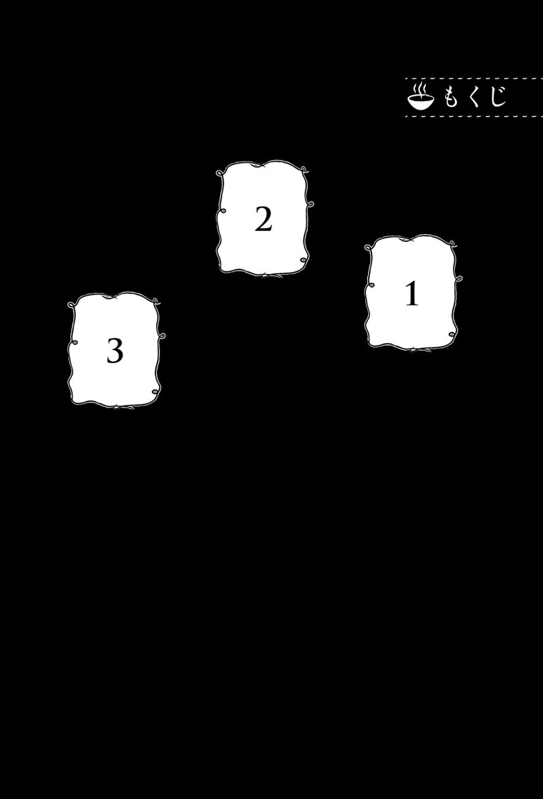
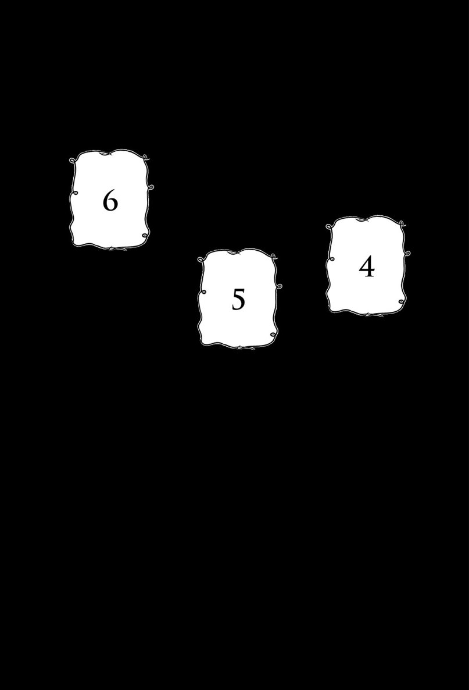
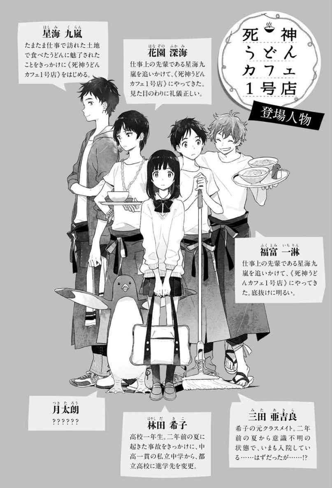
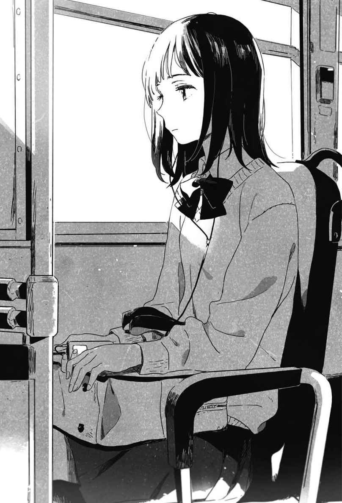
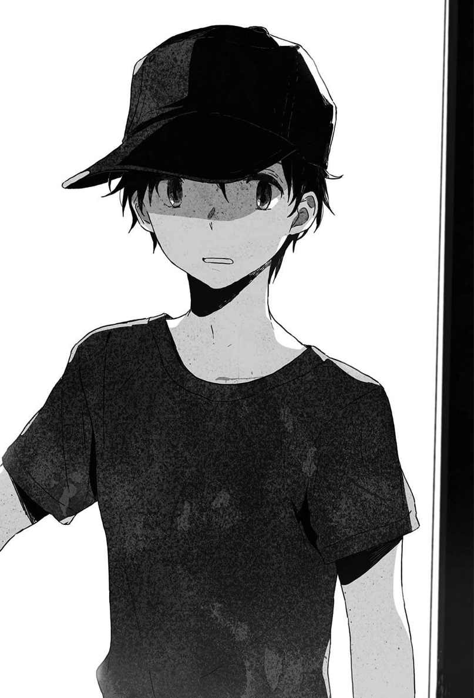
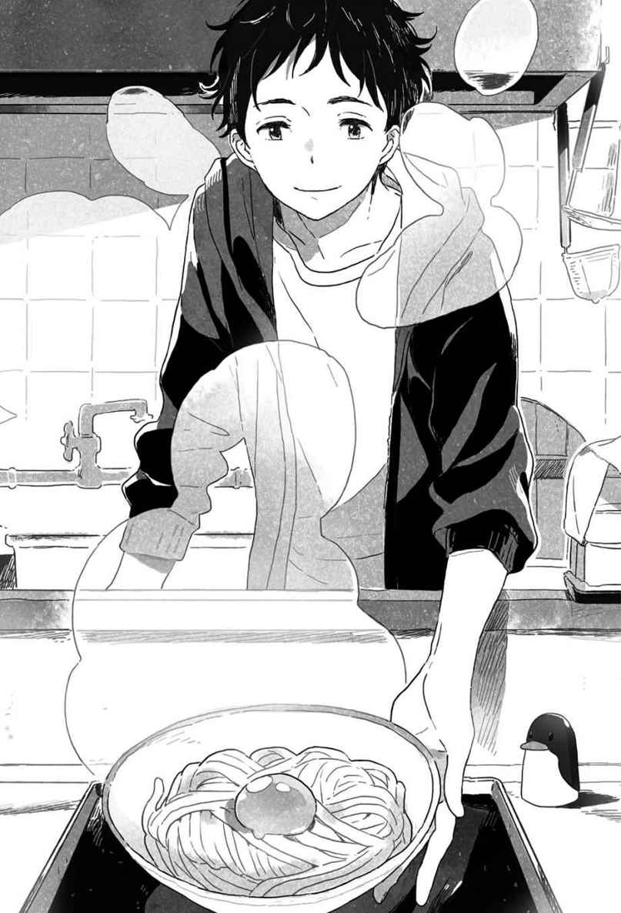
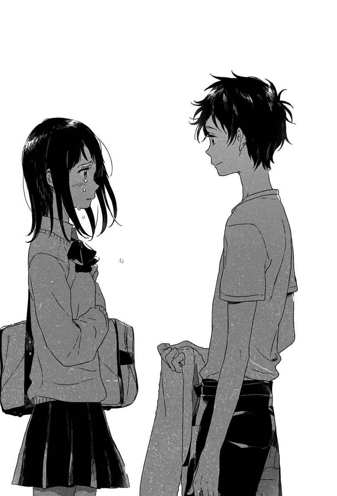
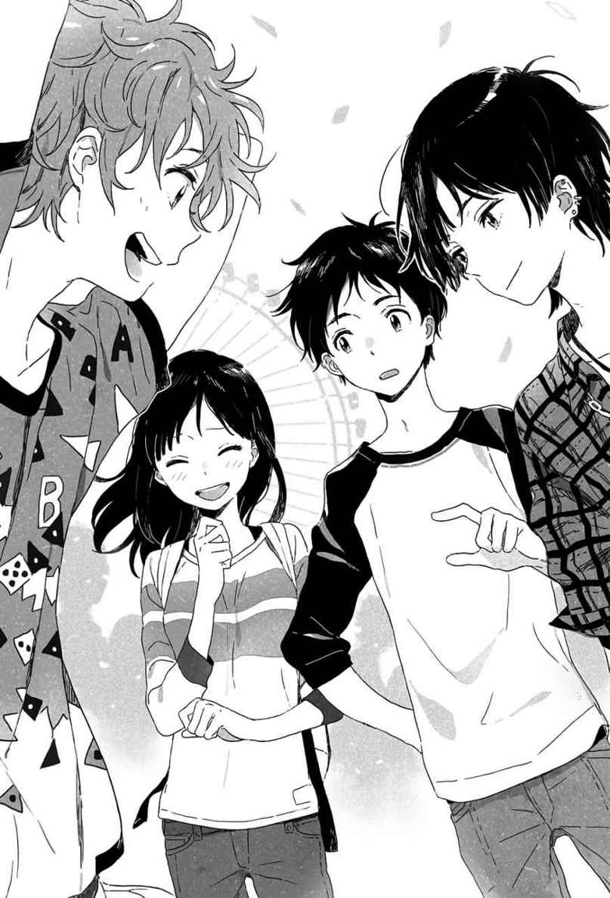
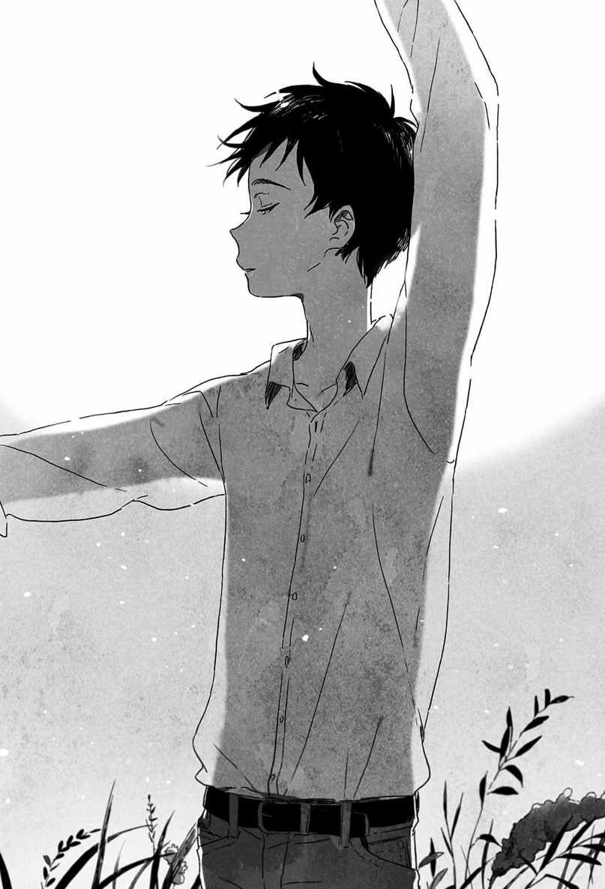

| 死神うどんカフェ１号店 一杯目 | |
| 石川宏千花 | |
| (2014) | |
死神うどんカフェ１号店
一杯目
石川宏千花



「これだ！」
裸電球にたよりなく照らし出された作業台の前で、死神はひとり、歓喜の声を上げた。
完成したそれを目の前にして、これこそ求めていたものだ、と思う。
死神は踊った。
うれしくて、踊った。
死神のダンスだ。
死神のダンスは、死の宣告を意味する。
彼のダンスはそれはもう見事なもので、彼の死の宣告を受けた者は、そうと気づかないうちに〈門〉の前に立つと言われている。
真っ白な粉でほおを汚したまま、彼は踊りつづけた。
相変わらず、見事なダンスだ。
そのステップはあまりに流麗で、それでいて力強い。見ていることがうしろめたくなるほどに官能的でもあり、どことなくはかなげでもある。
そんなダンスを踊ることができるのは、死神界広しといえども、彼だけだった。
裸電球のおぼろな光の下、真っ白な粉が煙幕のように漂う中を、彼のしなやかな腕がやわらかく動き、伸びやかな脚が美しい円を描く。
死神のダンスはつづいた。
だけど、彼のダンスはもう、人を殺さない。
どれだけ優美に踊ろうとも、以前のように人々を〈門〉の前にいざなうことはない。
彼はもう、死神ではなかった。
元死神だ。
彼はあるもののために死神界を捨て、人間界におりてきた。
彼はもう、人を殺さない。
これからは、人間として人間界で生きていくと決めたのだ。
彼に死神界を捨てさせたもの。
それは──。
夏が、くる。
肌が勝手に、夏の気配を感じ取った。
とたんに林田希子は、ぶるっと小さく身震いをした。
夏の訪れを察知すると、寒気を感じる。
いやなくせがついてしまった、と思う。
希子はひとりで校門を出ると、ひとりでバス停へと向かい、ひとりでバスに乗った。
乗りこんですぐ目の前にあるひとりがけの席が、希子の定位置だ。
席に着くとすぐにイヤフォンを耳に入れ、窓の向こうに視線を向ける。これで、バスに乗っている約三十分のあいだの快適な状態は確保できた。
高校に入学して、三か月になる。
この三か月のあいだ、希子がだれかといっしょに校門を出て、だれかといっしょにバス停へと向かい、だれかといっしょにバスに乗ったことは一度もなかった。
新しいクラスの中では、いっしょにいる顔ぶれはほとんど固定化されつつある。
何日か前までは、登下校も休み時間もひとりきり、という希子のようなポジションの女子がもうひとりだけいて、なにかと希子と交流を図ろうとしていたのだけれど、気がつけば、おっとりとして人のよさそうな女子たちの輪の中に入っていた。
──高校では、友だちは作らない。
そう決めたのは、希子自身だ。
楽しいこともしない。将来のためになりそうなこともしない。親を失望させない程度には、いい子でいる。それ以外のことは、なにもしない。
通っていた中高一貫の私立中学から、元クラスメイトがひとりも進学しないことがわかっている都立高校に進学先を変更したとき、希子はそう決めた。
中学時代の希子は自他ともに認める世話焼きタイプで、学級委員長を選ぶときには必ず名前があがったし、班にわかれれば決まって班長になり、クラス内でなにか問題が起きれば、とりあえず希子に相談が持ちこまれる、という具合だった。
そんな希子がもともと持っている空気が人を呼ぶのか、はじめのうちは気さくに話しかけてくるクラスメイトたちも多かった。
ただし、高校では友だちは作らない、と決めている希子の〈方針〉を察した者から順に、だれもが自然と希子のそばから離れていった。いまではもうだれも、希子のことは気に留めないようになっている。
望んだとおりに、希子は友だちのいない高校生活をスタートさせることに成功し、楽しいことなんてなにもない毎日を送っている。
いつもの定位置に座って、イヤフォンから流れてくる音楽でバスの中の雑音をシャットアウトしたあと、窓の外を流れていく景色をただひたすらに見つめはじめたら、将来のことなんて一秒だって考えない。

門限の七時よりもずっと早く自宅に着くよう、寄り道もせずにバスを降りるときにも、希子はただ、あの夏のことだけを思い出している。
空気を求めて開いた口の中に、容赦なく流れこんできた、水、水、水。
叫んだはずの声は、ごぼごぼと下水が流れるような音に変換されるばかりで、だれにも、どこにも、届かなかった。
世界から音が消え、色が消え、形も消えようとしていた、あのとき。
希子は見た。
水泡を無数にまとった手のひらが、自分に向かってまっすぐ伸ばされてくるのを。
音も色も形も失いかけていた世界の中で、たったひとつ、希子がつかむことを許されたもの──それが、彼の手だった。
つかまずにはいられなかった。
だから、つかんでしまった。
いまでも希子は、そのことを悔やんでいる。
どうしてあのとき、彼の手をつかんでしまったんだろう。
はらいのければよかった。そうすれば、彼を巻きこんだりしないですんだ。自分だけが、沈んでいくことができたのに......。
バスから降りる。
歩き慣れた住宅街の中を、ゆっくりと歩きはじめる。
目にする景色は、いつもと同じだ。
近代的なデザインの低層マンションや、要塞のような豪邸。いわゆる高級住宅街なので、どの住宅も重厚で、威厳がある。
そんな中にあって、そこだけ時代がちがってしまっているような一角が、バス停から希子の自宅へと向かう途中に、ひょっこりとあらわれる。
Ｙ字にわかれた二股の道の先端に建っている、木造の一軒家がそれだ。瓦屋根の平屋建てで、二階部分はない。
むかしからある住宅街なので、希子が子どものころには、そういった昭和の風情を感じさせる建物もよく見かけたけれど、ここ十年ほどのあいだにどんどん立て替えが進んで、この辺りで見かける木造の一軒家は、Ｙ字の道の先端にあるこの家だけになってしまった。
Ｙ字の道の先端にあるので、茶色い板塀にかこまれたその敷地の形は三角形だ。庭には何種類かの植物が植えられてはいるものの、むき出しの土の部分のほうが目立っている。
いつもひっそりと静まり返っていて、住人の顔も見たことがなかった。
「......あれ？」
いつもと同じはずの景色の中に、希子が見慣れないものを見つけたのは、その木造の一軒家が視界に入ってきたときだった。
思わず足を止めて、その見慣れないものをまじまじと観察する。
死神うどんカフェ１号店。
一枚板の看板らしきものには、そう書いてあった。黒い墨、丸みを帯びた文字で、そう書かれている。
敷地をぐるりとかこんでいる板塀の前、玄関があるらしい位置に、それは立てかけてあった。
きのう通りかかったときには、そんなものはなかったはずだ。
死神。
うどん。
カフェ。
１号店。
いっしょくたにするのがおかしいような気がする単語が、一枚の板の上にぎゅっとまとめられている。
希子は、その看板がどうにも気になってしまい、そろりと近づいていった。
こんなふうに、なにかが気になって仕方がない気持ちになるなんて、ここしばらくなかったことだ。
好奇心も、希子が自ら封印したもののひとつだった。
板塀の途切れたところから、そっと中の様子をうかがう。すりガラスのはめこまれた昭和レトロな引き戸が、開きっぱなしになっていた。玄関の上がり口が見える。
希子は、さらにもう一歩、玄関へと近づいてみた。
「あ、お客さん？」
思いがけない方向から、声がかかった。
希子は、全身の毛を逆立てた猫のようになりながら、とっさに、「はいっ」と答えてしまった。
勝手に敷地内に入りこんでおきながら、「いいえ」と答えれば面倒なことになるかもしれない、と一瞬のあいだに考えた末の、「はいっ」だった。
「うお、すげ！ お客さん第一号だ」
庭と思われる方向から、ひょっこりあらわれたその人物は、時代おくれなこの古ぼけた一軒家にはひどく不釣り合いな、若い男の子だった。
明るく染めた髪に、くせ毛風のアレンジがよく似合っている。あごが細く、目が大きかった。高校生にも見えるけれど、子どもっぽい大学生にも見える。
無地の白い丸首Ｔシャツに、カフェの従業員風のギャルソンエプロンを腰の低い位置に巻いているから、この店で働いているのはまちがいなさそうだ。
「なんでこんなときに先輩、家にもどっちゃってんだよぉ......入れていいのかな、いいよな、うん、お客さんだもんな」
ひとりごとなのか、それとも希子に向かって話しかけているのかよくわからない口調でぶつぶつとしゃべりつづけていた男の子が、なにかを吹っ切ったように、ぱっと笑顔を作った。
「どうぞ、お入りください」
いまさら引くに引けなくなってしまった希子は、うながされるまま玄関の中に入った。
玄関の向こうに廊下はなく、いきなり居間が目に飛びこんでくる。広い。広いというより、家の中全体が、大きな居間になっていた。
ところどころに太い柱がある。もともとはいくつかの部屋にわかれていたのを、壁を壊してリノベーションしたのかもしれなかった。
靴は脱がずに、そのまま中に入ってしまっていいようだ。希子は、通学用の革靴のまま、居間へと上がった。
「あれ、みーたがいない。どこいった、あいつ」
ギャルソンエプロンを腰に巻いた男の子が、居間に入ってすぐのところにある大きなカウンター席の向こう側をのぞきこんでいる。
カウンター席と向かい合う形で、調理スペースが設けられていた。シンクのステンレスが、ぴかぴかに光っている。くもりひとつなく、まだ真新しい設備だと見て取れた。そのすぐ横には、ぐつぐつと湯の沸いた大きな釜が置かれている。
ぐるりと店内を見回してみた。
床は全面、古木のような色合いの板張りになっていて、庭に面した窓際に、ふたりがけのテーブルが三つ、中央に長方形の大きなテーブルがひとつ、あとは、玄関から入ってすぐのところにあるカウンター席が六席、客席はそれで全部だった。
置こうと思えばもっと置けるはずのテーブルの数が少ないために、広い室内がさらに広く見えている。
それにしても、と思いながら、希子は自分を店の中につれこんだエプロンすがたの男の子の横顔をそっと盗み見た。
お客を席に案内もしないで、いったいなにをしてるんだろう......。
「おーい、みーたー、みーた、どこいったあ？」
呼んでも返事をしないということは、ここにはいないということだ。
それなのに、くり返し、みーたという名前を呼びつづけている。名前の印象からすると、猫なのだろうか。だとしたら、お客を放って呼びつづける理由っていったい......。
希子は、このすきに帰ってしまおうか、と思いついた。あの、と呼びかける。
「まだ準備ができていないようなら、わたし、帰ります」
見かねた希子が、そう声をかけたときだった。
「あ！ 先輩！」
エプロンすがたの男の子が、くるっとうしろを振り返った。つられて希子も振り返る。
玄関の上がり口に、白い丸首Ｔシャツに黒いパーカを羽織った男の人が、唐突に立っていた。
そのすがたを目にした瞬間、はっとなる。
なにに対してはっとなったのか、希子自身、よくわからなかった。
特別、なにかが目立つ容姿というわけでもないのに、と思う。しいていえば、顔が小さかった。おとなの男の人としてはごくごく標準的な身長のわりに、やたらとスタイルがよく見えるのは、そのせいだろう。
ぱっと見て気づく特徴はそれくらいなもので、顔立ちは地味だし、髪型もぼさぼさだ。
見れば見るほど、自分がこの男の人のなにを見てはっとなったのか、わからなくなってくる。
あまりのわからなさに、どうにも目が離せなくなっていた希子に向かって、
「あー......お客さん？」
びりびりっ、と胸に響くような低い声が、話しかけてきた。
え？ と思う。
一瞬、だれに話しかけられたのかわからなかったのだ。
「あ、ちがう？」
自分が目を奪われている相手の口が動くのに合わせてその声が聞こえていることに、ずいぶん遅れて気がついた希子は、きつねにつままれたような顔をしながらも、「ちがわないです」と答えた。
「あ、お客さんで合ってる？ よかった。えっと......じゃあ、お好きな席へどうぞ」
なんて見た目の印象からかけ離れた声を出す人なんだろう、とあっけに取られてしまう。
体つきや雰囲気からすると、たぶん、二十代半ばから後半くらいの年齢だと思うのだけど、その年齢だとしたら童顔に見えるし、体に厚みもないので、てっきり声も、それらしい少し高めのものを想定していたのだ。
「カウンター席でも、あちらのテーブル席でも、どこでも」
「あっ、はい、じゃあ、あそこに」
重ねて席をすすめられた希子は、あわてて窓際のテーブル席へと向かった。
木枠の大きな窓から、小さな裏庭が臨める席だ。
「なんでお客さん、立たせたままだったの？」
カウンター席のほうから、低く重く響くあの声が聞こえてくる。
希子を放ったまま、みーたみーたと呼びつづけていたあの男の子が、「えっ、だって、みーたがいなかったから」といいわけしているのも、聞こえてくる。
「みーたじゃないでしょ。なんで伸ばすんだよ、おまえは」
「みーたのほうが、呼びやすいから？」
「おまえはよくても、あいつはいやがってるだろ。正しく呼んでやりな」
「どっちだっていいじゃないすか。みーたって呼んでも、あいつ、ちゃんと返事するもん。ときどき、しらっと無視することもあるけど」
「......とにかく、お客さんはすぐに席に案内しなくちゃだめ。わかった？」
「うん」
「うん、じゃないの。店にいるときは、はい」
「はい」
「じゃあ、お客さんにお茶持ってって」
「はーい」
できの悪い従業員と、その教育に苦労している新米店長──。
盗み聞きしたふたりの会話からすると、そんな印象だった。
真っ赤なプラスティックの四角いトレイに、湯気の立った白いマグカップをのせて、できの悪い従業員──希子の頭の中ではすっかりそういうことになっていた──がやってくる。
「お茶でーす」
「あ、はい。ありがとうございます......」
「ご注文は、お決まりですか？」
えっ、ご注文？ メニューも渡されていないのに？ と驚いて辺りを見回す。
どこかにメニューが貼ってあるのかと思ったのだ。
ない。
見たところ、どこにもメニューはなかった。
「あの、メニューをもらってもいいですか？」
「メニュー？ あ、うち、かまたまうどんかカフェオレしかないんですよー」
かまたまうどんかカフェオレ？
その二択？
天ぷらうどんとかたぬきうどん、ただのかけうどんもないってこと？
カフェメニューのほうも、コーヒーも紅茶もなくて、カフェオレのみ？
希子は、驚くのを通り越して、なかばあきれたようになっていた。
従業員の教育もまだまだなうえに、こんなメニューの構成では、このお店、そう長くはないのでは、と思う。
しかも、住宅街のど真ん中で、決して立地がいいわけでもない。
「あの、お客さん？ ご注文は」
「あ、はい、えっと、おうどんはおいくらですか？」
一応、値段をきいてみることにした。
かまたまうどんかカフェオレの二択でやっていこうとしているくらいだから、どちらの味にもよほど自信があるのだろう。となると、かまたまうどんが千円越えしていてもおかしくはない、と心配になったのだった。
「かまたまうどんの値段すか？ 百五十円です」
「ひゃくごじゅうえんっ？」
思わず大きな声を出してしまった。
希子自身、こんな大きな声が出るんだ、と自分で自分にびっくりしてしまうほど、大きな声だった。
「だいじょうぶなんですか？ そんな安くて」
「えっ？ やっぱり？ ほらー、先輩。やっぱり百五十円は安いって！」
できの悪い従業員は、またしてもお客である希子を放ったらかして、カウンター席の向こうの調理スペースにいた〈店長さん〉に向かって、大声で話しかけはじめた。
「だからオレ、安すぎだと思いますよって言ったんすよー」
調理スペースのほうから、無言のまま〈店長さん〉が歩いてくる。
「安くはないですよ」
そして、あのよく響く低い声で、言うのだった。
「一食辺りの材料費、五十円くらいですから」
それ、お客さんに言っちゃだめなこと！
希子は思わず、ふるふると首を横に振った。言っちゃだめです、と伝えたつもりだった。
「え？ いや、うそじゃないです。本当に、五十円です」
「いえ、そうじゃなくて......」
「あ、家賃は必要ないんで。ここ、持ち家なんです。なので、値段は百五十円でもじゅうぶん元が取れ......」
「それ！ それをお客さんに言っちゃだめなんです！」
希子の剣幕に、〈店長さん〉はきょとんとした顔をしている。
きょとんとすると、黒目が目立って小さな子どものようだ。希子はますます、これはちゃんとわからせてあげないと、という一方的な使命感に燃えた。
もともと希子は、こういう相手にはつい世話を焼いてしまう性格なのだ。
久々に遭遇した〈自分が世話を焼かなければどうなってしまうかわからない相手〉に、つい火がついてしまったようだった。
「原価は教えちゃだめだと思います。お客さんはうすうすわかってはいても、はっきり金額を知っちゃうと、それよりずっと高いお金を払うのがもったいなくなっちゃいますから」
「なるほど......」
「ですから、たとえ原価が五十円だとしても、それはお客さんには絶対に秘密にしなくちゃだめなことなんです。で、〈店長さん〉はさっき、家賃がないからこの値段でもだいじょうぶだっておっしゃいましたけど、電気代やガス代、水道代だってかかりますよね。そちらにいらっしゃる従業員の方に払うお給料だって必要です。もろもろ考えたら、このお店の規模で百五十円は安すぎるんじゃないでしょうか」
「じゃあ、いくらくらいが......」
「そうですね、立地の悪さとメニューの少なさを考えると、あまり高く設定してもお客さんの入りが悪くなっちゃいますから、三百円が妥当なのかな......あー、でも、もうちょっといけるのかな......古民家カフェなんかが好きな層にうまく口コミしてもらえるようになれば、人気出そうだし......」
希子がぶつぶつひとりごとのように口に出しながら考えをまとめていると、
「ぼくも、三百円が妥当なとこだと思います」
できの悪い従業員のものでもなく、〈店長さん〉のものでもない声が、頭のすぐうしろから聞こえてきた。
「ひっ」
あまりの声の近さに、希子はまたしても逆毛を立てた猫のようになった。おそるおそる、視線だけをうしろに向ける。
希子のほとんど真うしろに、独特な雰囲気の男の子が立っていた。こめかみに向かって目じりが一直線につり上がった目で、じーっと希子を見ている。
真っ黒な前髪がまぶたのすぐ上でぱっつんと切りそろえられていたり、耳には無数のピアス、首には鍵がモチーフのヘッドがついた太いチェーンのネックレスが光っていたりもする。
服飾系の専門学校に通っていて、週末には原宿の洋服屋さんでバイトでもしてそうな人だな──。
そんな第一印象を持ちながら、ぺこ、と希子が会釈をすると、相手も、ぺこ、と会釈を返してくれた。
「いきなり話に入ってしまってすみません。ぼくがずっと思っていたことを、そのままおっしゃってくださっていたので、つい」
最初に〈店長さん〉の声を耳にしたとき、見た目の印象とのギャップに驚いた希子だったけれど、新たにあらわれたこの人物にも、同じような驚きを感じていた。
その容貌から、もっと横柄な話し方をするのではないかと勝手に思っていたからだろう、とても丁寧でやわらかな口調で話しかけられたことに、びっくりしてしまったのだ。
「いえ......わたしのほうこそ、部外者が口を出してしまってすみません」
「とんでもありません。いろいろ言っていただけるのは、すごくありがたいです。ぼくたち、まったくの素人なんで」
「〈店長さん〉も、お店をやられるのははじめてなんですか？」
希子がそうたずねると、なぜだか返事がない。それまで希子の目をじっと見つめていた三人目のうどん屋さん──エプロンはまだつけていないけれど、おそらくそうだと思われる──は、自分のすぐ横にいた〈店長さん〉と顔を見合わせていた。
「〈店長さん〉......って、もしかして先輩のことですか？」
「え？ あ、オレ？」
ふたりして、きょとんとしてしまっている。
希子は、小さな子どもがふたりに増えたような気分になった。
「決めてらっしゃらないんですか？ だれが店長をやるとか、そういうこと」
ふたりはやっぱり顔を見合わせたまま、「決めてない......よね」「決めてないかもですね」とぼんやりしたことを言っている。
希子の中で、なんとかしてあげなくちゃいけない、この人たちは！ という思いが、めらっと燃え上がった。
「決めましょう！ じゃないと、なにかが起きたとき、こまるじゃないですか。お客さんからクレームがきたとき、必ず言われますよ？ 店長はどこだ？ って。このお店、そもそもだれが最初にやろうって言い出したんですか？」
ぼさぼさ頭に手をやりながら、「あ、それはわたしです」と〈店長さん〉が答えた。
「厳密には、わたしがひとりではじめたんです。彼らはあとから勝手に押しかけてきて、いつのまにか居座ってしまって......」
服飾系の専門学校生風の男の子が、「......押しかけてきたとか言われてるし」とぼそっとつぶやく。
心外だ、と言わんばかりだった。
余計なことをきいてしまったのかもしれない。あわてた希子は、「でしたら！」と大きな声を出した。
「そちらの方......えっと」
えっと、と言いながら、希子は〈店長さん〉の顔をちらっと見やった。
「ほしみだよ。ほしみくらん」
そう答えたのは、なぜだか本人ではなく、最初に希子をこの店に引き入れた、できの悪い従業員だった。
「ほしみくらん、さん」
耳で聞いているだけだと、星以外の字面がまったく思い浮かばない。
「で？」
そのほしみくらんさんから、話のつづきを催促されてしまった。
「あ、はい。このお店をはじめたのがほしみさんなんだったら、店長さんはほしみさんでいいと思います」
「あ、じゃあ、そうします」
あ、じゃあって......そんな適当な、と思いはしたものの、とりあえず店長が決まって、ほっとする。
ほっとしたとたん、希子は自分がいま置かれている状況が、なんだかおかしなことになっていることに、はたと気がついた。
まったく初対面の男の人たち三人にまわりをかこまれているのもおかしいし、アルバイトの経験もない一介の女子高生が、うどん屋さんをはじめるにあたってのアドバイスらしきものをしているのもおかしいし......。
いったん我に返ってしまうと、希子はどうにもいたたまれないような気持ちになってきた。
帰ろう。
本当にもう、帰ろう。
ひざの上に置いていた通学バッグを肩にかけながら、立ち上がろうとしたそのときだった。
「あ、みーた！」
できの悪い従業員の口から、ふたたび、みーたという名前が飛び出してきた。
「どこいってたんだよー。あ、もしかして洗面所の掃除？ そーだそーだ、ちょっとやってきますって言っていなくなったの思い出した！」
できの悪い従業員の視線を、つい追ってしまう。
希子はてっきり、みーたが猫だと思いこんでいたので、そこにいたのが人間だったことに、まずはちょっとびっくりした。
少し遅れて、ひ、とのどが引きつる。
黒いベースボールキャップを目深にかぶったその顔が、希子にとってよく知ったものだったからだ。
「三田......くん？」
希子の声に反応して、キャップのつばが作る濃いかげに隠れていた目もとが、わずかにたじろいだのがわかった。
心臓が、どくん、と大きく跳ね上がる。
本当に、三田くんなの？
どうして？ どうして三田くんがいるの？
だって三田くんはいまも......。
希子は、ふーっと気が遠くなるのを感じた。
こんなところに、いるはずのない人だった。
三田亜吉良。
二年前の夏、希子に向かって伸ばされたあの手のひらの持ち主だ。
希子を助けるためにあの川に飛びこんで、希子よりもほんの少し救助が遅れたために、意識不明の重体におちいった元クラスメイト──。
三田亜吉良は意識不明の状態のまま、この二年間、一度も目を覚ますことなく、病室のベッドで眠りつづけている。
いつもはおだやかに話す父親の、荒々しい怒鳴り声が聞こえてきた。
「とんだ騒ぎを起こしてくれたもんだな、希子も！ 後先も考えずに、どうしてそんな余計なことをしたんだ！」
おびえたような、あきらめたような口調で、母親がそれに応じている。
「余計なことって、あなた......そんな言い方は......」
「余計なことだろう！ こんなことさえなければ、わたしが会社を早退してまで飛んで帰ってくる必要もなかったし、近所の注目を集めることだってなかったじゃないか。これが余計なことじゃなくてなんだっていうんだ！」
母親は、言葉を詰まらせてしまったようだ。無言の時間が、少しばかり流れた。
「......それで！ その溺れていた子どもというのは助かったのか」
「え？ ええ、希子ちゃんが体を押し上げてあげて、なんとか岸に上がれたそうです」
「そのとき希子も岸に上がることはできなかったのか！」
「流れが激しくて、自力ではどうにもならなかったようで......」
「そこに、三田とかいう子がたまたま通りかかったのか？」
「ええ、たまたま通りかかって、流されかけていた希子ちゃんを助けようと川に飛びこんでくれて......」
そこで、父親の口から舌打ちが、ひとつ。
「そのあとすぐに救助隊が到着したんだろう？ ろくに泳げもしないのに、なんだってその三田ってやつもそんな余計なことをしたんだ！」
「あなた、それはあんまりですよ......三田くんは、ちゃんと泳げるお子さんだったそうです。その三田くんが飛びこんで希子ちゃんを岸に寄せてくれたから、希子ちゃんはすぐに救助してもらえたんですよ。三田くんの助けがなければ、希子ちゃんだって......」
「過ぎた話はもういい！ で、あちらはどう言ってきてるんだ！ え？ まさか、うちに賠償を求めるつもりじゃないだろうな」
「そんな話は出ていませんよ......」
答える母親の声は、完全に疲れきっていた。
もうこれ以上、この自分勝手な人とは言葉を交わしたくない。そう思っていることが、いやというほど伝わってくる声だった。
希子の意識がまだもどっていないと思いこんでいたからこそ、両親は病室のすぐ前で、あんな会話をしてしまったのだと思う。
実際、目を覚ました希子との最初の対面のとき、父親は開口一番、よくやった、希子はパパの誇りだ、というようなことを言っていたのだから。
そのとき希子はもう、自分の父親は、自らの命の危険をおかしてまで他人を助けようとするのはおろかなことだ、と本心では思っている人なのだということを知ってしまっていた。
失望──。
ひとことで言うなら、それ以外になかった。
だれもが知っている大きな会社に勤めて、都内の高級住宅街に立派な一軒家を所有して、ひとり娘の自分をなに不自由なく育ててくれた父親を、希子は心から敬愛していた。
真っ白だったその気持ちが、たった数分の会話をたまたま耳にしたことで、真っ黒にすすけてしまった。
立派な人間だと思っていた父親の、あまりに非情で、あまりに自分本位な本性。そんな父親に、ふだんは見せない嫌悪をにじませながらも、いさめることもなくただただ会話をつづけていただけの母親──。
さらに、自分を助けてくれた三田亜吉良が意識不明の重体だと知らされたとき、希子のすすけてしまった真っ黒な心は、こらえきれずにとうとう、こっぱみじんにくだけて散った。
三田亜吉良の両親は、わざわざ希子のところまでお見舞いにきてくれて、まるで自分の子どものことのように希子の回復をよろこんでくれた。泣きながらあやまる希子をやさしく抱きしめてもくれたし、あなたとうちの息子がしたことは、とっても尊いことなのよ、と言ってもくれた。
希子が自分の両親にしてもらいたかったことのほとんど全部を、三田亜吉良の両親がしてくれたのだ。
生き残ったことを、ただただ後悔するだけの日々のはじまり──。
父親にはもちろん、母親にも、ふたりの会話を聞いてしまったことを打ち明けるつもりはなかった。
表面上、父親はいい父親の顔をつづけていたし、母親もそんな父親に調子を合わせている以上、希子もまた、いままでどおりいい家族をつづけざるを得なかったからだ。
希子にできることといえば、父親のように表の顔と裏の顔を持つことくらいだった。
もう二度と迷惑はかけないから、その代わり、あなたたちの子どもであることを呪わせてください......。
ひとり静かに閉ざされた希子の心は、それきり二度と、開いていない。
体は蘇生したけれど、心は死んだままだ。
希子はいまも、死にながら生きている。
「あ、起きた！」
ぱち、と目を開くと同時に聞こえてきた、威勢のいい声。
真っ先に視界に飛びこんできたのは、あのできの悪い従業員の顔と、シミの浮かんだ板張りの低い天井だった。
「だいじょうぶ？ えーっと、はやしだ......きこ？ きこでいいの？ これ」
これ、と言いながら、生徒手帳をさし出された。
「はい、きこです......」
そう答えながら、ようやく希子は、バッグに入れておいた生徒手帳がどうして！ ということに気がついた。
あわてて跳ね起きる。
いつのまにか、希子はふとんの上に寝かせられていた。
「どっ、どこですか？ ここ！」
知らないうちに、知らないどこかに運ばれてしまっていた、という事実に、希子は心底、震え上がった。
「あ、ぼくらの寮です。あのうどん屋から歩いて五分くらいのところにあるアパートです」
そう説明してくれたのは、服飾系の専門学校生風のつり目の男の子だ。
「あの、ど、どうしてここに......」
「急に倒れちゃって、ぼくたちがあたふたしてたら、亜吉良がきみのことさっと抱き上げて、こっちに運んだんです」
あきら。
この人いま、あきらって言った。
「......やっぱり三田くんだったんだ......」
気が遠くなる前に見た、黒いベースボールキャップを目深にかぶったあの男の子。
あの男の子は、やっぱり三田亜吉良だった。
意識不明の状態のまま、いまも病室のベッドで眠りつづけているはずの──。
いったいどういうことなんだろう、と考えこんでいた希子の頭の上から、なんとなく懐かしいような気がする声が、ふいに降ってきた。
「店にはふとんとかないし、客がくるかもしれないから、こっちに運んだほうがいいかと思って」
振り返ると、黒いベースボールキャップをかぶった男の子──三田亜吉良が、チョコレート色の扉が開いたままになっている部屋の入り口に立っていた。
「......三田くん」
「うん。久しぶり、林田さん」
何度お見舞いにいっても、眠っている顔しか見ることができなかった。話しかけても、揺さぶってみても、絶対に目を開けてはくれなかった三田亜吉良が、立ってしゃべっている。
特徴的な深い二重の目で、じっとこちらを見つめている。

希子の目から、ぽたっ、と大粒の涙が落ちた。
なにがどうなってこんなことになっているか、さっぱりわからない。
わからなかったけれど、うれしかった。
ずっと夢見ていたのだから。
三田亜吉良が目を覚まして、なにごともなかったように話し出すその瞬間を。
希子は、両手で顔をおおって泣き出した。こらえてもこらえても漏れ出てくるおえつが、だれもなにもしゃべらない静かな室内に、さざ波のように漂う。
こんなに泣いたのは、二年前の夏、三田くんのご両親に泣きながらあやまったとき以来だ、と希子は思った。
そう広くはない砂壁と畳の正統派な和室に、こんなところにいるはずのない三田亜吉良、できの悪い従業員、服飾系の専門学校生風のつり目の男の子、そして、〈店長さん〉ことほしみくらんさんが勢ぞろいしていた。
たたんだふとんを背に正座をしている希子の正面に、横一列に四人でならんで、やはり、正座をしている。
どうして病室のベッドで眠りつづけているはずの三田亜吉良がここにいるのか。
説明を、求めたのだった。
その結果、こういう状態になった。
「わたしに考えつくことがあるとすれば、三田くんの意識は回復していて、でも、なんらかの事情でそのことは伏せておきたかったから、ときどき病室にもどって意識不明のふりをつづけていた......とか、それくらいなんですけど」
「ぶーっ。はずれー」
できの悪い従業員──福富一淋というそうだ。ついさっき、自己紹介されて知った──が、場を和ませようとしているのかなんなのか、空気を読まない浮かれた声を出した。
すぐとなりにいた服飾系の専門学校生風のつり目の男の子──こちらは、花園深海というらしい──が、ひじで軽くその横腹をつついている。
「じゃあ、どういうことですか？ わたし、つい二日前の日曜日にも、お見舞いにいってるんです。三田くんはたしかに、ベッドで眠っていました。回復の兆しはまだないって、看護師さんもおっしゃってたんですよ？」
希子の追及に、とうとうほしみくらんさん──星海九嵐と書いて、ほしみくらんと読むそうだ──が、口を開いた。
「林田希子さん」
「は、はい」
「亜吉良くんは本来、彼の存在を知っている人間の目には、見えないようになっているはずなんです」
「は？」
「深海に調べてもらったんですが、あなたは二年前の夏、亜吉良くんといっしょに、一時的に意識不明の重体になってるよね？」
どきっとなった。
どうしてこの人がそんなことを知っているんだろう、と。
「つまり、あなたは亜吉良くんといっしょに、一度は死にかけている。だから、彼のことが見えるんですよ」
希子は急に、すーっと背筋が寒くなった。
こわい、という感情がわくよりもずっと早く、体がなにかを察知したような、そんな感じだった。
「じゃあ、三田くんは......」
「彼はいま、半死人として活動できるようになっているだけです」
半死人。
想像もしていなかったような話に、希子は言葉もなく九嵐の顔を見つめた。
最初に顔を合わせたときには気づかなかったけれど、この人、本当はすごくきれいな人なのかもしれない、とふいに思う。
小さく引きしまった顔の輪郭以外、目も鼻も口も、なんの特徴もないからすぐには気がつかなかっただけで、こうしてまともに目を合わせていると、頭の芯がしびれたようになるくらい、魅力的な顔立ちに思えてくる......。
「希子！ きーこ！」
いきなり大音量で聞こえてきた自分を呼ぶ声に、はっと体が揺れた。
「しっかりして！ 先輩に魅入られちゃだめだよ、死んじゃうから」
くせ毛風にアレンジされた一淋の前髪が、いつのまにかすぐ目の前にあった。心配そうに、希子の顔をのぞきこんでいる。
「だいじょうぶ？ もどってきた？」
そう言ってから一淋は、くるっと顔をうしろに向けた。
「だめだよ、せんぱーい。この子、一度死にかけてるから、オレたちに魅入られやすいんだよ。先輩とあんなふうにガチで見つめ合ったら、イチコロだってば」
希子は、ついさっきまで感じていた九嵐への奇妙な陶酔に、あれはなんだったんだろう、と首をかしげた。
いま、九嵐を見ていても、なにも感じない。
地味な顔立ちだけど、よく見ればちょっとかわいい？ くらいなものだ。
「......林田さん、びっくりするかもしれないけど、いちばん簡単な説明をするね」
向かい合って座ってからは、ずっと黙ったままでいた亜吉良が、急に希子に話しかけてきた。
「じつはオレもいまだにちょっと、ホントかよ？ って思ってはいるんだけど、この人たち、死神なんだよ」
「しに......がみ？」
「そう。死神」
ぶつ、となにかが切れたように、思考が止まってしまった。パソコンがフリーズするときって、こういう状態なんじゃないかな、と意味もなく思う。もちろん、パソコンに思考回路があるとしたら、の話だ。
しばらくぼーっとしたあと、希子は、どうでもいいことからたしかめた。
「星海さんだけじゃなく......福富さんも、花園さんも？」
こく、と亜吉良がうなずく。
「一淋さんも、深海さんも、三人とも」
「死神？」
「死神」
三人のうちひとりでも死神なら、それが何人に増えようが、たいして気にするポイントではないのでは、と遅れて気がつく。
希子はあらためて、目の前にいる一淋の顔と、そのすぐうしろにいる九嵐と深海の顔をまじまじと見つめた。
どう見ても、人間に見える。
そこらへんをふつうに歩いている、ふつうの日本人だ。
日本語だってふつうに話しているし、一淋にいたっては、ガチ、なんて単語まですらっと出てきていた。
そんな死神、いる？
希子は、自分で自分に問いかけた。
いないよね、と頭の中で即答しかけたそのとき、亜吉良の顔に目がいった。
まともに目が合う。
そうだ。
だったら三田くんのことはどう説明するの？
希子は、熱に浮かされたようにふわっと腰を浮かすと、そのまま這って亜吉良に近づいていった。
正座をしている亜吉良の前に、ひざ立ちになる。
白いＴシャツの肩に、そっと触れてみた。さわれる。手のひらを、二の腕のほうまですべらせてみた。すかっ、とからぶったりはしない。ちゃんとさわれている。
「......さわれるよ？」
「あー、うん、さわれるみたい。ものにはさわれるけど、人間にはどうなんだろうって思ってたから、オレもさっき、林田さんのこと抱え上げたとき、あれって思った」
それについては、亜吉良のとなりにいた深海が説明してくれた。
「ぼくや一淋には絶対できないすごいことなんですけど、九嵐先輩は、〈肉貸し〉っていうのができるんです。亜吉良にはいま、九嵐先輩から肉が貸された状態になってて、だから、実体はちゃんとあるんですよ」
「じゃあ、病院にいる三田くんは......」
「魂だけ、こっちにきてるんです。病院にはちゃんと、亜吉良の本体は残ってますよ。で、本体から抜け出た状態の魂に先輩が〈肉貸し〉してるから、いまの亜吉良は、ほぼふつうの人間として存在できてるんです」
「でも、わたしにしか見えないんですよね」
「亜吉良を知ってる人には、です。亜吉良をもともと知らない人には、そのままちゃんと見えますよ」
「そう......なんですか」
三田亜吉良が、どうしてここにいるのか。
そのからくりのようなものは、だいたい理解できた、と希子は思った。
死神やら半死人やら〈肉貸し〉やらについて深く考え出すと、また思考が止まってしまいそうなので、それはちょっと置いておくことにする。
「で、その死神さんたちが、どうしてうどん屋さんを？」
希子のいたって冷静な問いかけに答えたのは、一淋だった。
「香川だっけ？ ってあるでしょ？ そういう名前の土地。そこでね、仕事の合間にうどんを食べたんだって。そしたら先輩、雷に打たれたようにうどんのとりこになっちゃって、死神界にもどってからも忘れられなかったんだって」
つづけて深海がしゃべり出す。話しながらずいっと前に出てきて、一淋のとなりにならぶかっこうになった。
「死神をやめるやめないで、さんざん上ともめたあげく、ほとんど夜逃げ同然の状態で人間界におりてきちゃって、で、はじめたのが、あの《死神うどんカフェ１号店》ってわけです」
さらにふたりは、九嵐がお店をはじめるまでの経緯についても教えてくれた。
きっかけは、ふたたび仕事で日本を訪れたさい、死の宣告を与えにいった老婆から、あの木造の一軒家と、そして、希子がいまいるこの築五十年越えのおんぼろアパートを譲られたことなのだという。
長く死神をやっていると、相続する相手のいない人間から、あんたにやるよ、と莫大な遺産をぽんと譲られることも少なくないのだそうだ。
死神に譲られたものの、その相続を放棄された物件や資産は、相続者なしとして役所に処理され、いずれはその国のものになってしまうだけだ。
九嵐は、老婆からの相続を受けた。
死神が相続を受ければ、自動的にその遺産は、死神自身が設定した人間界での仮のすがたで所有することができるようになる。
公的機関にも、自動的にそう登録されるようになっているのだそうだ。
そうして元死神の九嵐は、人間・星海九嵐としてあの木造の一軒家とこのおんぼろアパートを所有することとなり、人間界での新しい生活をはじめたのだという。
ひととおり説明が終わったのか、一淋と深海が、お互いの顔を見合わせながら、うんうん、とうなずいている。
正面に向き直った深海と、目が合った。あ、と言って、深海がまた、しゃべり出す。
「ちなみにぼくと一淋は、先輩と同じ地域を担当していた直属の部下だったんですけど、ぼくと一淋に限らず、死神やってる若い子だったら、たいてい先輩のファンなんです」
「ファン......ですか？」
「星海九嵐の死神のダンスは、死神界随一でしたから」
死神のダンス......。
なんだかまた、深く考えると気が遠くなりそうなフレーズが出てきたので、希子はそれに関しては聞き流すことにして、ふたりがここにいる理由をたずねてみた。
「じゃあ、花園さんと福富さんは、星海さんを追いかけてこちらに？」
「はい。本当は、すぐに連れもどすつもりでこっちにきたんですけど、先輩がうどん作りに情熱を燃やしてるのを見てたら、もうちょっとだけ、好きにさせてあげたいなって思っちゃって」
「気がついたら、オレも深海も、開店準備の手伝いとかはじめちゃってたんだよな」
「先輩って、死神としてはこれ以上ないほど輝く人だけど、仕事から離れると、うーんって感じの人だからなあ」
深海の言いたいことは、なんとなくわかる、と希子は思った。
見た感じはしっかりしてそうなのに、どういうわけか小さな子どもを相手にしているような気持ちにさせられる人だ、と希子も感じていたからだ。
元死神で、人間としてはまだ未熟だということなのだろうか。
それにしては、一淋と深海にはそういった不安定さはあまりない。
ということは、もともとの性格なんだろうなあ、と思いながら、希子はあらためて、目の前にいる四人をまじまじと観察した。
四人中、ひとりは半死人。三人のうちひとりは元死神で、ふたりはいまなお現役の死神、ということになる。
「......いまここにいる人たちの中で、ふつうの人間って......」
だれに言ったつもりもなく、ただなんとなく口にしたつぶやきに、一淋が陽気に答える。
「希子だけだね！」
「みたいですね......」
死神がこんなに陽気で無邪気でいいものなのかな、と首をかしげかけたところで、希子は、はたと気がついた。
四人？
あのお店にいた人全員、ここにいる？
「あのっ、お店！ お店にだれかいなくていいんですか？」
答えたのは、九嵐だ。
「きょうはもう閉めちゃったんで」
腕の時計に目をやると、針は七時五分前をさしていた。
夜の七時といえば、飲食店にとってかき入れどきではないか。
「だめじゃないですか！ そんな気まぐれにお店を閉めたりしちゃ」
「でも、希子さんが......」
「介抱してくださったことにはとっても感謝してますけど、だからって、お店のほうをおろそかにするのは感心しません。商売人として、なってないです！」
「はあ......」
いきおいでそこまで言ってしまってから、希子は、ん？ となった。
七時？
「七時！ 門限！」
思わず叫んでしまった。
つられたように、一淋がうろたえ出す。
「えっ、なに？ なになに？ なにがやばいの？」
すかさず亜吉良が、「林田さんのうちは、夜の七時までに帰らないといけないうちってことですよ」と説明してやっている。
「すみません、なんか中途半端なところで申し訳ないんですけど、わたし、帰ります」
すくっと立ち上がった希子に、はいこれ、というように、深海が希子の通学バッグをさし出してくる。
「ありがとうございます！ じゃあ、わたしはこれで！」
門限をやぶるなんて、希子の中では考えられないことだった。
二年前のあの夏以来、もう二度と親のまゆをひそめさせるようなことはしない、とかたく心に誓ってこれまで生きてきたのだから。
開いたままになっていたチョコレート色の扉の前で、希子は一瞬、立ち止まった。
「つづきは、またあした！ きょうと同じくらいの時間にお店にいきますから！」
のちのち希子は、このときの自分はどうかしていたのだ、と思った。
なんだって自分は、まるでそれが当然のように、あしたまたお店にいくだなんて言ったりしたんだろう、と。
そう気がついたのは、その日の夜遅く、ベッドにもぐりこんでからのことで、このときの希子に、そんなことを考える余裕はなかった。
部屋の外に飛び出すやいなや、薄暗い板張りの廊下を全速力で駆け抜けて、ひどくきしむ急な階段も一気に駆け下りると、まだ明るい七月の空の下、一目散に自宅へと向かって走ったのだった。
たしかめておかなければいけないことが、ひとつある。
三田亜吉良のことだ。
元死神だけど、なにやらものすごい能力の持ち主であるらしい星海九嵐のおかげで、半死人という状態ではあるものの、ほぼふつうの人間として、あの《死神うどんカフェ１号店》で働いているらしいことはわかった。
死神ってなに？ 半死人って？ という部分からはひとまず目をそらしておくとしても、わからないのは、どうして三田亜吉良があの店にいるのか、ということだ。
これは絶対にたしかめておかなければならないことだと、希子は思う。
──だから、自分はきょうもあのお店にいく。
そう自分で自分に言い聞かせないと、なかなか足があのＹ字の道の先端にある一軒家に向かいたがらない。
迷う理由はいくつかあった。
まず、ひとつ目。
店の関係者でもなく、うどんにくわしいわけでもなく、ましてや飲食店の経営を経験したことがあるわけでもない自分が、一方的にあれこれとアドバイスらしきものをしてしまったのだ。
正直言って、恥ずかしくて二度と彼らとは顔を合わせたくないくらいの気持ちだった。
ふたつ目。
制服すがたで、自宅からごく近い距離にあるあの店に出入りしているところを、近所のおばさんに見られでもしたら......。
万が一、それが母親の耳に入ってしまうことを考えると、ぞっとなった。
希子がいままで、息をひそめるように生活してきた日々が台なしになってしまう。
そして、三つ目。
もしかしたら希子にとって、それこそが、あの店に近づくことをおそれているいちばんの理由かもしれなかった。
相変わらず、その看板はひどく異質なものとして希子の視界に飛びこんできて、しばらく足を止めて見入ってしまうほどだった。
「死神うどんカフェ１号店......、どうしてこんな店名にしたんだろ」
まったくの希子のひとりごとに、「教えてやろうか」と答える声があった。
子どもの声だ。
びっくりして、辺りを見回す。
だれもいない。
「......空耳？」
戸惑う希子に、ふたたび同じ子どもの声が、「空耳じゃないぞ。ぼくがしゃべった」と話しかけてくる。
希子はさらに、用心深くきょろきょろとまわりの様子をうかがった。右、左、うしろ、正面。
すると、板塀の途切れた向こう側に、ひょっこり頭を出している黒いかたまりを見つけた。
それは、どう見ても──。
「ペンギン......だよね？」
だれに答えを求めたつもりでもなく、気がついたら口に出ていた希子のその問いかけに、やはり、子どもの声が応じた。
「そうだ、ペンギンだ。しかし、それはぼくの名前ではない」
黒いくちばしが、ぱくぱくと動いていた。
希子のひざよりも下に頭があるので、顔が上を向いている。
自分を見上げているこの小さなペンギンがしゃべっているらしい、と気がついてからも、希子はまだ、きょろきょろと辺りを見回しつづけていた。
どこかにだれかが隠れていて、ペンギンのくちばしの動きに合わせて、アフレコのようなことをしているのではないかと思ったからだ。
「こら、おまえ。なにをよそ見をしている。ぼくが話しかけてるんだ。ぼくを見ろ」
怒られた。
ペンギンに、視線をもどす。
「そうだ。話をするときは、相手の目を見て話すのが礼儀だ。覚えておけ」
なんてえらそうなペンギンなんだろう、とちょっとあきれかけたところで、
「あ、いた！ だめだろ、月太朗、勝手に店の外に出たりしちゃ」
玄関から、一淋が飛び出してきた。
「あれっ、希子だ。なにやってんの、そんなとこにつっ立って。早く入んなよ」
一淋は、それだけのことを言い終えるまでのあいだに、ずんぐりと丸いペンギンを両手で抱え上げると、まるで猫のように腕にくるんで、きびすを返そうとしていた。
「あの、ちょっ......それ、そのペンギン、いま、しゃべったんですけど......」
「それ？ あ、月太朗のこと？ あー、しゃべるよー、こいつは。ホント、うるさいくらい、おしゃべりだから。でもまあ、一日のほとんどは寝てるけど」
たしかめたいことが、新たにもうひとつ増えた。
──どうしてペンギンがしゃべるんですか？
希子は、ふうっと小さく深呼吸をすると、意を決したように大きく一歩踏み出して、《死神うどんカフェ１号店》に入っていった。
お客さんがいる！
お店なのだからお客さんがいるのは当たり前だというのに、カウンター席に座っている若い女性のすがたを見つけたとたん、希子は思わず、ぎょっとなった。
カウンター席の向こう側、調理スペースには、きのう店長になることが決まったばかりの星海九嵐のすがたがある。
なにやら女性に話しかけているようだった。
「どうですか。お気持ち、変わりませんか？」
「すみません......まだちょっと、気持ちの整理が......」
「そうですよね。わかります。あなたにとって、とてもつらいことをお願いしてると思います。でも、わたしはあなたを助けたいんです」
「お気持ちは、うれしいです......だけど、本当にわたし、あの人のことがこわくて、できればもう、二度と会いたくないんです......」
「わかります。会いたくないですよね。元カレとはいえ、いまはストーカーなんですから」
「ええ......本当にもう、顔も見たくないくらいで」
「だけど、彼を納得させてあげられるのは、あなたしかいないんです。あなたがそれをしなければ、彼のあなたへの憎しみが消えることはありません。時間が経てば経つほど、その憎しみは膨張をつづけてしまうんじゃないでしょうか」
「わたし、あの人に憎まれるようなことなんか......」
「してないです。それも、わかっています。あなたはただ、気持ちがなくなってしまった相手に、別れを告げただけですよね。だけど、その方法は、おそらく彼にとって、納得がいくものではなかったのでしょう。だから、彼はあなたに攻撃的な行動を取るようになってしまった。では、どうすれば彼に納得してもらえるのか。むずかしいことをする必要はありません。もう一度、別れ直せばいいんです」
「もう一度、別れ直す......」
「あなたは、彼に憎まれるようなことはなにもしていない。わたしには、わかります。でも、彼は、わかっていない。あなたにひどいことをされた、と思いこんでいる。だから、誤解を解かなくちゃいけないんです。ひどいことなんてしていないって。彼自身に、自分たちはただ、恋愛期間を終えただけなんだ、と納得してもらう必要があるんです」
「誤解を、解く......」
九嵐は、言葉巧みに女性になにかを承諾させようとしているようだった。
最初は乗り気ではなかった様子の女性が、次第に九嵐の説得に気持ちをかたむけつつあるのが、はたから見ていてもよくわかる。
「あ、希子さん」
玄関を入ったところで立ちつくしたままになっていた希子に、カウンター席の横にいた花園深海が気づいて近づいてきた。
「遅かったですね」
「すみません、ちょっとバスが遅れて......あの、あちらの女性、お客さんじゃないんですか？」
「うーん......厳密な意味ではお客さんではないですね」
「どなたなんですか？」
「説明するとちょっと長くなっちゃうんですけど、あの人はぼくと一淋がつれてきた人で......」
そこまで話したところで、深海は、お、という顔をして、ギャルソンエプロンのポケットに手をつっこんだ。出てきたのは、スタッズ柄のケースに入ったスマホだ。
「亜吉良？ あ、もう近くまできてるの？ わかった。ちょっとそのまま待機してて」
またあとで、と目顔で希子に合図をすると、深海はカウンター席のほうにもどっていき、九嵐に声をかけた。
「先輩、もう近くまできてるそうです」
九嵐が、こく、と小さくうなずく。
「ここに、彼を入れます。いいですね？ あなたのことは、わたしが必ず守りますから」
女性は小さな声で、はい、と答えた。
五分も経たないうちに、玄関の引き戸を引いて三田亜吉良が入ってきた。そのすぐうしろには、小柄な若い男の人がつづいている。
カウンター席に座っていた女性──真理那さんというそうだ──は、緊張したように背中をこわばらせていた。
希子は、カウンターの横にもどった深海のとなりにならんだ。いったいどういう事情でこんなことになっているのかはわからなかったけれど、どうやら九嵐たちは、元カレにストーカーされている女性と、その元カレとを引き合わせようとしているようだった。
「慎吾さんですね、お待ちしてました」
九嵐がそう声をかけると、慎吾というらしいその人物は、顔をうつむかせたまま、わずかに頭を揺らした。返事のつもりらしい。
「こちらに、どうぞ」
九嵐は、真理那が座っている席からふたつ離れた席に慎吾を座らせた。そのふたつ分の空席が、いまのふたりの関係だとわからせるかのように。
「ひ......久しぶりね」
震える声で、真理那が慎吾に話しかけた。慎吾はなにも答えない。沈黙が、店内に横たわる。
「......オレ、真理那になんかした？」
ぽつりとつぶやくように、慎吾が口を開く。
いまにも泣き出しそうな、迷子の子どものような声だった。
驚いたように、真理那が首を横に振る。
「慎吾はなにもしてないよ！ ただ、わたしがもう、前みたいに慎吾のことを......」
好きじゃなくなっただけ──。
そう言いたいんだろうな、と希子にはわかったけれど、真理那はその先を口にすることはできずにいた。
懇願するように、慎吾が言う。
「真理那がいやがることはもうしないから。洗濯物も裏返しのままたたまないし、食べたらすぐ、食器は水につけるようにする」
「ちがうの、慎吾。そういうことじゃないんだよ」
「じゃあ、なに？ はっきり言えよ、なにがいやなのか！」
慎吾がとうとう、声を荒らげた。
真理那は、びくっと肩を揺らして、それきり黙りこむ。わざと黙ったというよりは、こわくて話せなくなった、という感じだった。
ふたりのあいだになにがあったのかはわからないけれど、相手がなにを言おうとしているのか考えようともしないで、自分が言いたいことだけ言う人は、わたしだっていやだな、と希子は思った。
「......慎吾のこと、もう好きだと思えない。本当に、ただそれだけ。それだけなの......」
言った。真理那がとうとう、本当のことを言った。
ごく、とのどが鳴る音を聞く。てっきり自分ののどが鳴ったのだと思っていたら、となりの深海が、んんっ、とせきばらいをしている。どうやら、のどが鳴ってしまったのをごまかしているようだ。
死神でも、緊張してのどが鳴ったりするんだ......と思いながら、その横顔をちらっと盗み見る。
きのうと同じく、ぱっつんと切りそろえた前髪の下で、目じりがきゅっとつり上がっている。首にはきのうとはちがったデザインのネックレスが下がっていて、細い手首にはスタッズのついた黒革のブレスレットが、がちりと巻かれていた。
ファッション雑誌のスナップで見かけるようなその風貌に、きょうの深海は、白い丸首Ｔシャツに細身の黒パンツを合わせて、ギャルソンエプロンをつけている。
うどん屋さんを、やる気満々のすがただった。
本当はこの人も、死神はもうやめてしまってるんじゃないのかな──。
ふと、そんなふうに思いかけたところで、がたっと大きな音を立てて、真理那が椅子から立ち上がった。
「慎吾とは、もうつきあえない。わかってください......」
それだけ言い残すと、きびすを返して店から出ていってしまった。
あとを追おうと立ち上がりかけた慎吾に、すかさず九嵐が、「待って」と声をかける。
「彼女から、うどん代をいただいてるんです。食べていってください」
うそだ。真理那はうどん代なんて置いていっていない。
それでも慎吾は、なにかしら思うところがあったらしく、真理那を追うことはあきらめて、おとなしく椅子に座り直した。
なにをする気なんだろう、とハラハラしながら、九嵐の一挙手一投足を見守る。
九嵐はすぐに白い粉にまみれたうどんの束を手に取ると、湯気の上がっている釜の中にそれを振り入れた。
ゆでているあいだに、かごからたまごを取り出して割り、白身と黄身をわけ、器の準備をする。五分ほどでざるに上げられたつやつやの白いうどんは、すぐに器に入れられて、その上にまるっとした黄身がそうっとのせられる。
「お待たせしました」
慎吾の前に、できたてのかまたまうどんが、ごとんと置かれた。その横には、ペンギンの形をした醬油入れが添えられている。
ペンギン！
それを目にした瞬間、希子は、それまですっかり忘れていたしゃべるペンギンのことを思い出して、きょろきょろと辺りを見回した。あの黒くてずんぐりとした生きもののすがたは、どこにも見当たらない。そういえば、福富一淋のすがたもなかった。

代わりに目に入ってきたのは、玄関を入ってすぐのところに立っていた亜吉良だった。
深海と同じく、すでに黒のギャルソンエプロンをつけている。
希子は今朝、病院に電話をかけてみた。
三田亜吉良さんの容態に変わりはないですか、とたずねる希子に、すっかり顔なじみになった看護師さんが残念そうに、「変わりはないわねえ」と答えてくれた。
亜吉良はたしかにいまも、病院のベッドにいるのだ。
だけど、希子の目の前にも、こうしてちゃんと存在している──。
「どうぞ」
九嵐の声にはっとなり、希子はふたたび、カウンター席の慎吾に視線をもどした。
九嵐にうながされて、慎吾がはしを手に取る。ずずーっとうどんをすする音が、店内に響いた。
慎吾が、ぽつりとつぶやく。
「......うまい」
九嵐の、よく見ると形よく整った小さめのくちびるが、かすかに笑う。
慎吾は、無言のままうどんをすすりつづけた。よほど、おいしいのだろうか。
希子は、急に空腹を感じた。おなかがすいた、と感じたのは、ひどく久しぶりなような気がする。
とたんに、ぞっとなった。
やっぱりわたし、ここにくると気がゆるむんだ！
それは、なにより希子がおそれていることだった。
いまの亜吉良が感じることのできない、楽しい、うれしい、わくわくする、という思い。しあわせすぎて、生きていることに感謝してしまいたくなるような気持ち。
全部、あの二年前の夏から、希子が自ら封印してきたものだ。
そのためにわざわざ進路を変えて、同じ中学出身の子がだれもいかない都立高校を受験し直したのだし、いまだって友だちも作らずに、ひとりでいることを選びつづけている。
いままでは、うまくやれていた。
生きてはいるけれど、死んでるも同然。
そんなふうに毎日を送ることを、ちゃんと上手にやれていたのだ。
それなのに......。
希子は、ふう、とため息をついた。
本当にもう、ここにくるのはきょうで最後にしよう。
どうして三田亜吉良が半死人としてこの店で働くことになったのか。その理由だけ教えてもらったら、二度とこの《死神うどんカフェ１号店》には近づかない。
希子は、そう決めた。
希子の胸の中にひそかな決意が生まれたのと入れ替わるように、慎吾がうどんを食べ終える。
はしを置きながら、慎吾は唐突にしゃべり出した。
「......オレにとって、真理那ははじめての彼女で、だから、すごく大切に思ってたし、真理那がよろこぶことなら、なんでもしてあげてるつもりでした」
うん、と九嵐があいづちを入れる。
「なのに、もう別れたいって急に言われて、まったく納得がいかなくて、理由、きいたんです。何度も。でも、真理那、ごめんねって、そればっかりで......」
「せめて、理由は知りたいよね」
「はい......本当に、最初はそれだけだったんです。それで、何度も電話したり、メールしたり、真理那のバイト先にいったり......いろいろしちゃって。そしたら、急にアドレスも電話番号も変えられて、頭に血が上ったんです。なんて卑怯な女なんだって」
「向こうはただ、これ以上、話すことはないからって思ってそうしただけかもしれないけど、やられたほうは、そんなふうには思えないからね。わかるよ」
「そこから、自分でもやばいなって思うこと、どんどんするようになっていきました。そっちがその気なら、こっちだってって感じで」
「ああ、うん。そうなるのも、わかる」
九嵐は、慎吾の言うことを、そんなことしちゃだめじゃないか、とか、なんでそんなことをしたんだ、とか、そういうふうにはいっさい言わずに、ただ、うんうん、と聞いている感じだった。
とにかく、慎吾がいま、吐き出したいことを全部、吐き出させようとしている。
希子には、そんなふうに見えた。
「久しぶりにちゃんと顔を合わせて、真理那が本気でオレのこと、こわがってるのがわかりました。オレは、ケンカ売ってきたのはそっちだろって感じでいろいろやってたけど、本当は、真理那にそんなつもりはぜんぜんなかったんだって、なんか急に気がついたっていうか......」
「うん。彼女はただ、好きな気持ちがなくなったってことを、なるべくきみを傷つけないように伝えたかっただけみたいだったね」
「そう......なんですかね」
「オレには、そんなふうに見えたかな」
「そうですか......じゃあ、そうなんでしょうね、きっと。オレのどこを直せばいい、とか、そういうことじゃなく......」
いつのまに用意していたのか、九嵐が、食べ終わったうどんの器をさげるのと同時に、ほかほかと湯気を上げているカフェオレボウルを慎吾の前に置いた。
「こちらのお代はもらってないんで、これはうちの店からのサービス」
慎吾は、両手で包むようにしてカフェオレボウルを持って、口もとに運んだ。
希子のいる場所からは、慎吾の顔をはっきりと見ることはできなかったけれど、しきりにはなをすする音が聞こえていた。
「ごちそうさまでした。また、食べにきます」
最後にぺこっと頭を下げて、慎吾は店から出ていこうとした。
「あ、ちょっと待った」
見送るためにカウンターの向こうから出てきていた九嵐が、なぜだか慎吾を呼び止めた。
「それ、もういらないでしょ？」
それ、と言って九嵐が指さしたのは、慎吾の上着のポケットだった。
ほんの一瞬、驚いた顔をしたけれど、慎吾はすぐに、ポケットの中に手を入れた。
出てきたのは、小ぶりな果物ナイフだ。
九嵐はさらりとそれを受け取ると、自分のギャルソンエプロンのポケットにしまった。
慎吾は、さっきよりもさらに深く頭を下げて、みんなに見送られながら帰っていった。
玄関の引き戸が閉められて、数秒後。
「ちょっと先輩！ 話がちがうじゃん！」
どこに隠れていたのか、胸の前にペンギンを抱いた一淋が、ひょっこり出てくるなり大きな声で騒ぎ出した。
「ストーカーもこの店につれてこいっていうから、てっきりやる気になったと思ったのにさあ」
まったく話が見えないので、希子は思わず、「あの！」と声を上げてしまった。
「そもそもみなさんは、どうしてさきほどのストーカー問題に関わることになったんですか？」
答えたのは、一淋の腕に抱え上げられているペンギンだった。
「仕事だ。一淋と深海は、九嵐に死神としての仕事をさせようとしてたんだ」
「それとさっきのストーカー問題が、どう関係して......」
「一度でもなりゆきで死神の仕事をすれば、やっぱりこっちのほうが向いてるなってなるんじゃないかって思ってるんだ、一淋と深海は」
そうなんですか？ というように希子が一淋の顔を見ると、けろっとした様子で、うん、とうなずいた。
「あのふたり、近々、死ぬ予定だったから」
「ええっ？」
「だよな？ 深海」
すかさず深海が、ギャルソンエプロンのポケットからスマホを取り出し、なにやらスクロールしている。
「女のほうが刺殺、男のほうは自殺ってなってる」
「ちょ、ちょっと待ってください、それっていったい......」
「だからー、先輩が余計なことさえしなければ、さっきの男は元カノのあの女をナイフで刺して、自分はあとで電車に飛びこんで死ぬはずだったの」
「じゃあ、星海さんは、死ぬ予定だったふたりを助けたってことですか？」
「そうなんだよー。ストーカーもここにつれてくるってことは、てっきりここで殺させるつもりなんだと思って、オレも深海も協力してたのにさ。ホンットこの人、オレたちがしてほしいことと真逆なことするんだもん。こまっちゃうよ、もー」
「どうして星海さんは、死ぬ予定の人を助けちゃうんですか？」
純粋に、不思議だった。
いまはやめているとはいえ、死神は死神なのだから、死んでしまう人をかわいそうに思う気持ちがあるとも思えない。
「ただ単に、ぼくたちの思惑にはのせられないぞってことだとは思うんですけどね」
答えたのは、問いかけられた本人ではなく、深海だった。
九嵐は、肯定するでも否定するでもなく、慎吾に出していたカフェオレボウルを片づけている。
ふたたびペンギンが、しゃべり出した。
「そこにいる亜吉良だって、もとはといえば、一淋たちが九嵐に仕事させるためにさがし出してきた死亡予定者だったんだぞ」
「......三田くんも？」
希子は、はっと顔を上げ、亜吉良を見た。
視線に気づいた亜吉良が、小さくせきばらいをする。
「いきなり枕もとに立ってたんだ。一淋さんと深海さん、それに、九嵐さんの三人がね。最初に九嵐さんと目が合って、すごいびっくりした。なんでオレ、目が開いてるんだろうって」
病院のベッドにいる亜吉良は、いつでも目を閉じたままだった。希子がどれだけその目が開くことを望んでも、開くことはなかった。この二年、一度も。
「そしたら、九嵐さんが急に、『肉、貸してやろうか？』って。一淋さんと深海さんは、なんで貸すんですか、だめですよ、ちゃんと仕事してください、とか言って騒いでたし、肉を貸すってなんだよって感じだったし、なにがなんだかよくわからなかったけど、オレ、うなずいたんだよね」
そしたら、と言って、亜吉良は自分の体を見下ろした。
「こうなってた」
「それは、つまり......三田くんも、近いうちに死ぬ予定になってたってこと？」
深海が、答える。
「機械の故障かなんかで、事故死する予定だったんですよ。でも、先輩はダンスを踊らなかったし、〈肉貸し〉までしちゃったから、亜吉良の死期は未定の状態にもどったんです」
「そう......だったんですか」
つまり、うどん屋さんをやる気満々に見えていた深海は死神をやめてなんかいなくて、一淋もそれは同じで、ふたりはなんとかして九嵐に死神の仕事をさせるため、あれこれと画策している。そういうことらしかった。
そんなふたりの行動の結果、半死人になった亜吉良は家にもどることもできず、身を寄せられそうな場所もなかったため、《死神うどんカフェ１号店》の店員として働くことになった──。
希子はようやく、亜吉良がいま、こうしてここにいる理由を知ることができた。
「ついでに教えてやろう」
黙りこんでしまった希子に、またしてもペンギンが話しかけてきた。
話しかけながら、一淋の腕の中でもがいている。降ろせ、と訴えているようだ。一淋は、身をかがめて床の上に降ろしてやった。
床に降り立ったペンギン──一淋はたしか、月太朗と呼んでいたはずだ──が、よちよちと希子のほうに近づいてくる。
「じつはこのぼくも、九嵐の力で死にそこなったクチだ」
そこで、はた、と気がつく。
当たり前のように会話していたけれど、そういえばこれペンギンだった！ と。
「ぼく、もとは人間なんだぜ」
にやり、と笑ったような気がした。
くちばしで、笑えるはずがないのに。
おまえとはまだ仲よくなってないから、ぼくがペンギンになった理由は教えられない。
ペンギン──月太朗はそう言って、どういういきさつで人間からしゃべるペンギンになったのかは、教えてくれなかった。
ただ、亜吉良と同じく、九嵐の死神の力によって、その摩訶不思議な状態が生まれたことはまちがいなさそうだった。
「あ、あともうひとつ」
月太朗が、大事なことを言うぞ、というように、ほとんどのけぞるようなかっこうになりながら希子を見上げてきた。
「ぼくをぎゅっとしていいのは、ぼくと本当に仲よくなったやつだけだからな。勝手にぎゅっとするなよ」
「う、うん......わかった」
まだなんにもしてないのに......と思いはしたものの、とりあえずうなずいておく。
たしかに、このずんぐりと丸いフォルムを見ていると、そのうち勝手にぎゅっとしてしまいそうだ、とは思う。
まあ、その前に仲よくなってしまえば問題ないようだからいいか。ここにくればいつでも会えるみたいだし、そのうち自然と仲よく──。
そう思いかけたところで、希子は、はっと我に返った。
仲よくなる？ わたしが？
なにを考えてるんだろう、と思う。そんなこと、あるわけがない。絶対に、しちゃいけないことだ。
わたしはだれとも仲よくならない。ここにだってもうこない。いままでどおり、楽しいことなんてなにもない毎日を過ごしつづける──。
希子は、九嵐をはじめとする《死神うどんカフェ１号店》の店員たち全員に向かって、ぺこっとお辞儀をした。
「いろいろ、疑問に思っていたことがすっきりしました。これからも、お店、がんばってください」
そして、そう告げるとすぐに玄関へと向かった。
「ちょっと、希子！ なんなの、それ。もうこないみたいな言い方じゃん！」
一淋がすかさずそう声をかけてきたけれど、希子はそのまま引き戸を引いて外に出てしまった。うしろ手で戸を閉め、小走りに路地へと飛び出す。歩き出すと、目の奥がじんとしびれたようになった。
もうここにくることはない。
それがつらいのだ、という自覚はあった。
だからこそ思う。
これでいい、と。
たしかに三田亜吉良はいま、まるで生きていたころと同じように立って、しゃべって、動いているけれど、それは半死人という仮のすがたでしかない。家族のもとにだって帰れていない。
本当に生きているわけではないのだから、自分と対等ではないのだ。はるかに自分のほうが、いい思いをしている。
だから、うっかり楽しいなんて思ってしまう、あのお店にはもう近づいたりしない。
あしたからはまた、楽しいことなんてなにもない毎日を生きていくんだ......。
「これ、使う？」
ふいに、目の前に白い無地のタオルがさし出されてきた。
えっ？ と足を止め、顔を横に向けると、そこには亜吉良の横顔があった。
どうしてタオルなんか......と思いかけて、はじめて気づく。自分が泣いていることに。
気づかないうちに、涙を流しながら歩いていたのだ。希子はそのことにもびっくりしたし、亜吉良が追いかけてきたことにも、びっくりしていた。
「これ、きょうはまだ使ってないから」
なかなか受け取ろうとしない希子にしびれを切らしたのか、亜吉良は勝手に、希子の目もとにタオルを押しつけてきた。
「泣くほどつらいなら、またくればいいんじゃない？」
そして、そんなことまで言ってくるのだった。
希子は、押しつけられたままのタオルの下で、ふるふると首を横に振った。
「どうして？」
「どうしても」
亜吉良は、ふう、とため息をついた。
「......林田さんはさ、わざわざ受験し直して、よその高校いったんだよね」
どうしていま、そんなこと、と思っていたら、亜吉良が急に、「あのさ」と怒ったような声を出した。
なにを言われるんだろう、と思う。
まったく予想がつかない。
希子は、タオルでふさがれたままの目をかたく閉じて、亜吉良の次の言葉を待った。
三田亜吉良のことは、じつはよく知らない。
本当に、ただのクラスメイトだったのだ。
二年前のあの夏の日、たまたま同じ事故をそれぞれに目撃して、たまたま同じタイミングで、同じ行動を取った。
それ以前には親しく口をきいた記憶もないほどなので、亜吉良がどういう性格なのかも、よくは知らなかった。
それでも、大勢で群れる、ということはなく、だれといても、どこにいても、いつもひょうひょうとした様子でいたことくらいは覚えているし、少なくとも、この人って性格悪いんだなあ、と思うような言動を目にしたことは、一度もなかったはずだ。
そんな亜吉良でも、二年も目を覚まさないで、しかも、この先も意識を取りもどせるかどうかわからないような身の上になれば、その原因となった相手に恨みごとのひとつやふたつ、言いたくなってもおかしくはない。
だから、覚悟はできていた。
たとえそれが、どれだけ自分の心を散り散りに打ちくだく言葉だったとしても、三田亜吉良だけは、それを言ってもいいのだと。
それだけのことを、この人はされている。
三田亜吉良は、希子の目もとにタオルを押しつけたままでいた。
そんな状態のまま、「あのさ」のつづきを話し出す。
「進学先を変えたり、自分がしたいこと我慢したり、そういうの、もしオレのためなんだったら、なんの意味もないからね？」
相変わらず目もとにタオルが押しつけられたままなので、亜吉良がいま、どんな表情をしているのか、たしかめることができない。
希子は、亜吉良の手首につかまるようにして、手をどかせようとした。
亜吉良の力のほうが強くて、ぴくりとも動かない。
「オレがこんな状態なのに、自分だけ楽しそうにしやがって、とかって思うほど、オレ、性格悪くないつもりだから」
「わかってるよ......三田くんがそんな人じゃないことくらい」
「だったら──」
「三田くんのためじゃないの！ わたしは、わたしのためにしてるの！ そうしてないと、罪の意識でどうかなっちゃいそうだから！」
だれも罰してくれないから、自分で自分を罰している。
そのことに、文句を言われたくはなかった。
希子の目もとから、はらりとタオルがはがれていく。
目の前に、亜吉良の顔があった。
まっすぐに希子の目を見て、言う。
「オレ、九嵐さんの力を借りてはいるけれど、いまはこうして立って、歩いて、しゃべってるじゃない？ これってじゅうぶん、生きてるって言わないかな」
「え？」
「オレ、生きてるよね？」
なんと答えればいいのかわからなかった。
戸惑う希子に、亜吉良は同意を求めつづける。
「生きてるって思うでしょ、林田さんも」
戸惑いながらも、こく、とうなずく。
「だったら、林田さんもいっしょに生き返らないと。じゃない？」
この人は、と思う。
この人は、底なしのお人よしだ。底なしのいい人だし、底なしの強い人だ。
この二年、希子がしてきたことを亜吉良は察している。察したうえで、いっしょに生き返ろう、と言っているのだ。
「......半分だけ、なら」
しゃくりあげそうになるのをこらえながら、どうにか出した希子の震える声に、亜吉良は、どういうこと？ というように首をかしげている。
「三田くんはいま、半分しか生き返ってないと思う......だから、わたしも半分だけ、生き返ってみる」
半分だけ生き返るために、あしたもまた、《死神うどんカフェ１号店》にいく──。
あそこにいるときだけは、楽しいと思う気持ちを解放してみよう。
希子は、胸の上に手を置きながら、ふう、と深呼吸をした。
声には出さずに、そっとつぶやく。
──三田くんが、それを許してくれるのなら......。

「あの、花園さん」
「深海でいいですよ。みんなそう呼んでるでしょ？」
「あ、はい、じゃあ、深海さん」
「なんでしょう？」
希子は、がらんとした店内を見回しながら、失礼なことをおききするようですが、と前置きしてから話しはじめた。
「こんなにお客さんがこなくて、このお店、だいじょうぶなんですか？」
「だいじょうぶ、というのは？」
「みなさんのお給料とか」
「ああ、それは──」
そこから先は、足もとからの声が説明してくれた。
「心配ないぞ。この家と、もうひとつのおんぼろアパートを九嵐に相続させたご老人は、相当な額の貯金もいっしょに遺してくれたからな」
深海のふくらはぎのうしろから、黒々とした丸いかたまりが、ひょこっと頭を出す。
「あ、月太朗くん」
「よう、希子。きょうもきたか」
学校帰りの希子がこの《死神うどんカフェ１号店》に通うようになって、もう一週間になる。
元人間で、現ペンギンの月太朗ともすっかり顔なじみだ。
すがたの見えない一淋と亜吉良は、駅前にチラシを配りにいっている。
希子の提案だ。
宣伝をいっさいしていない、と知った瞬間、指令を出していた。いますぐチラシを作って、駅前で配らなくちゃだめです、と。
九嵐はというと、カウンターの奥の調理スペースとは別にある作業室にこもって、うどんを打っている。
店内にいるのは、深海と希子、そして、ペンギンの月太朗だけだ。
「そういえば、前に月太朗くん、どうしてこのお店の名前が《死神うどんカフェ１号店》になったのか、教えてくれるって言ってなかった？」
月太朗が、うん？ というように、希子を見上げてくる。そのしぐさが、たまらなく愛くるしい。希子は、ぎゅっとして抱き上げたくなる気持ちをぐっとこらえた。
月太朗は、おまえとはまだ仲よくなってない、と言って、ぎゅっとさせてくれないのだ。
「たいした理由はないんですよ。自分は元死神だから、で、《死神》。うどんとカフェのお店だから、で、《うどんカフェ》。いずれはうどんの本場にも店を出したいから、で、《１号店》。全部くっつけて、《死神うどんカフェ１号店》って店名にしただけなんです」
月太朗が話し出す前に、深海がさらさらっと説明してしまった。
「おい、こら、深海！ ぼくが説明しようとしてたのに、なんで横取りした！」
怒っている月太朗のことは無視して、つづけて深海が言う。
「ぼくは、死神は入れないほうがいいんじゃないですかって言ったんですけどねえ」
「死神ってばれたらこまるからですか？」
「あ、いえ。よほどのことがない限り、ぼくたちが死神だってことはばれたりしないんで、それはだいじょうぶだと思いますけど、店名に死神がついてる飲食店って、流行らなそうじゃないですか」
それはたしかにそうだ。
正直、希子も、わざわざ好き好んで死神なんて言葉を店名に使うはずはないし、なんでこの店名なんだろう、と思っていた。元死神が人間界でお店を開くときには、店名に必ず死神を入れなければならない、というおかしな決めごとでもあるのかと思っていたくらいだ。
どうやら、そんな決まりごとはないらしい。
「でも、星海さんは、《死神うどんカフェ１号店》でいくって決めちゃったんですね」
「星海さん......ああ、先輩のことですか。あのー、希子さん」
「はい？」
「ぼくたちのことは、みんな下の名前で呼んでください。一応、日本人らしくってことで名字も作ってありますけど、ふだん使ってないから、すぐ忘れちゃうんですよね」
「自分の名字をですか？」
「まあ、仮の名前のようなものですから」
深海いわく、人間界にいるときの死神たちの名前は、それぞれが踊る死神のダンスから取られているのだという。
たとえば、花園深海という名前は、死神界の言葉にすると、花園にいるのか深海にいるのかもわからなくなるような心持ちになる踊り、を意味していて、それをそのまま日本語に訳したものなのだそうだ。
死神が人間界で人間のすがたを取るときには、自動的にそうした名前が頭の中に浮かぶのだという。
言葉も同様らしい。
必要に迫られて、この国の人間になりすます、と決めた場合、その瞬間から自動的にその国の言葉が話せるようになり、また、ある程度の文化や風習なども頭の中に入った状態になるのだと、深海は説明してくれた。
死神について、またくわしくなってしまった......と思いながら、希子は、一淋のフルネームを口に出して言ってみた。
「えっと、福富さんは福富一淋だから......」
「福と富を浴びるほど与えられているのに、一抹の淋しさも感じてしまうような踊り──一淋は、そんなダンスをします」
ふたりが踊っているすがたを想像してみる。
死神のダンス、と言われても、うまくイメージできない。ストリートダンスを踊っているふたりしか、思い浮かばなかった。
「先輩のダンスは、本当にすごいですよ」
深海が、うっとりしながら言う。
「星の降る海に、九つの嵐が吹き荒れているような踊り......あんなふうに踊れる死神は、先輩だけです」
心酔しきっている様子の深海が、なんだかほほえましかった。
「深海さんも一淋さんも、本当にほし......九嵐さんのことを慕ってらっしゃるんですね」
深海は恥ずかしがることもなく、「はい」と素直にうなずいた。
「だから、なんとかして先輩を死神界につれて帰りたいんですけどねえ......」
それは、深海の心からの願いなのだとわかる声音だった。
深海と一淋の気持ちを思えば、九嵐には死神にもどってほしい気もするけれど、きらきらした目でうどんを打っているすがたを見ると、このままうどん屋さんでいさせてあげたい気もする。
希子は、お客さんがひとりもいない店内を、複雑な気持ちで見渡した。
「すみませーん、やってますー？」
ちょうどそこに、玄関の戸を開けて中年の女性がひとり、入ってきた。
「あ、はーい。いらっしゃいませ」
すかさず深海が、女性に駆け寄っていく。
「カウンターのお席と、テーブルのお席がございますが、どちらになさいますか」
「そうねえ、テーブル席でもいいかしら？」
「はい、お好きなところにどうぞ」
希子の母親よりも少しだけ若く見えるその女性は、木枠の大きな窓の横に置かれたテーブル席へと向かった。
会社帰りなのか、黒いパンツスーツに、Ａ４ファイルが入りそうな四角いバッグを肩にかけている。
希子はお客を装うため、カウンター席に腰をおろしてから、深海の仕事ぶりを見守ることにした。
「ご注文はお決まりですか？」
マグカップに入ったお茶が、女性の前に置かれる。
「メニューは、かまたまうどんとカフェオレだけなんでしょ？」
「はい、そうです。あ、チラシ......これを見てきてくださったんですか」
「駅前でもらったものだから。おもしろいお店ね、かまたまとカフェオレしかメニューがないなんて」
「その分、どちらも味に自信はあります」
「ふふ、きっとそうなんでしょうね。じゃあ、おうどんくださる？」
「ありがとうございます。少々お待ちください」
さっそく、チラシの効果があったようだ。
「お客さん？」
洗面所や作業室がある廊下のほうから、九嵐がひょっこり顔をのぞかせた。
「あ、はい。おうどんの注文、入りました」
希子がこっそり、そう答えると、九嵐は、粉で真っ白になった腕を、ゾンビのように胸の前につき出しながら調理スペースに入ってきた。
手を洗いながら、深海のほうをちらっと見ている。注文が入ったのに、声をかけなかった深海に怒っているのかと心配になり、希子も肩越しに深海を振り返った。
なにやら考えこんでいる顔だ。
「どうした？」
九嵐はてきぱきとうどんをゆでる準備を進めながら、カウンターまでもどってきた深海に声をかけている。
深海は、はっとしたように目をまたたかせてから、「あ、いえ、じつは......」とひそめた声で話し出した。
「あの人、たぶん、死亡予定者です」
「あ？ そうなの？」
九嵐が、ぐっと首を伸ばして窓際の席にいる女性をのぞき見た。
「......ふうん。死因は？」
いつのまにか手にしていたスマホをスクロールさせながら、深海が答える。
「自転車との衝突事故ですね」
「ちょっと見せて」
深海が画面を九嵐のほうに向ける。九嵐は作業を進めつつ、画面に目を走らせはじめた。
「その、加害者側のほうの情報も見せて」
言われるままに深海はスマホを操作し、ふたたび画面を九嵐のほうに向けた。
「ん、運んで」
まんまるなたまごの黄身がのったうどんの器が、ごとん、とカウンターの上に置かれた。
九嵐は本当に手際がいい。あっというまに、おいしそうなかまたまうどんを作ってしまう。
希子は、何度か食べた九嵐の作るかまたまうどんの味を思い出して、ごくん、とのどを鳴らした。
はじめて食べたときの驚きは、いまも忘れられない。おいしい、とだけ言うのでは申し訳ないような気持ちになるほど、本当に、本当においしかったのだ。
スマホをギャルソンエプロンのポケットにもどした深海が、できたてのうどんをトレイにのせて運んでいく。
「希子さん、オレはちょっと出てきます。深海にそう言っといてください」
「えっ？」
腰に巻いていたギャルソンエプロンの結び目を手早くほどきながら、九嵐がカウンターの奥から出てきた。
「どっ、どこにですか？ お客さんがきたらどうする......」
「うどんのゆがき方と、カフェオレのいれ方は、深海にもできるように教えこんであるからだいじょうぶ」
そう言い残すなり、玄関に向かってしまう。
ほとんど反射的に、希子はあとを追いかけていた。
この人、きっとあの女の人を、自転車でひき殺しちゃう人のところにいく気だ──。
そう思ったら、自然と体が動いてしまったのだ。
勝手についてきた希子に、九嵐は少し驚いたような顔をしたものの、特になにも言わなかった。
足早に歩く九嵐の少しうしろを、希子もまた、黙ってついていく。
空はまだ明るいものの、少しずつ近づいている夜の訪れに、ほんのりと淡い紫が混ざりはじめていた。
「有名な音楽家の記念館......って、ここか」
そう言って九嵐が足を止めたのは、地元の子どもなら、小学生時代に必ず一度は見学につれてこられているはずの記念館の前だった。
記念館の前の歩道は急な坂道の途中になっていて、もう少し進んだところには、スクランブル交差点がある。
「さっきのお客さん、ここで自転車にひかれちゃうんですか？」
「ちょうどこのくらいの時間に、坂道になってるこの歩道を猛スピードでおりてきた自転車が、交差点のほうから歩いてきたさっきの女性に激突する......らしい」
たしかにこの坂道を、ブレーキをかけずにおりてくる自転車は多い。
特に、塾にいく子どもたちがこの道をよく通るのだけど、たいていの子は急いでいるので、猛スピードで坂をくだっていくのだ。
顔を横に向けて、坂道を見上げてみる。
タイミングよく、駅前にある進学塾のバッグを斜めがけにした小学生の男の子が、自転車でくだってくるすがたが目に飛びこんできた。
「あー、あの子もブレーキかけてない......」
希子が思わずそうつぶやいたその横で、なぜだか九嵐が、どこに隠し持っていたのか、たまごを手に腰をかがめた。
なにをするんだろう、と思いながら見ていると、唐突に地面に向かって転がした。
ころころころ、と転がり出したたまごを、猛スピードで坂道をくだってきた自転車のタイヤが、ぐしゃっとひきつぶしてしまう。
「あーっ！」
九嵐がびっくりするほど大きな声を出した。
急ブレーキをかける音──。
塾のバッグを斜めがけにした男の子が、自転車にまたがったまま、こちらを振り返っている。
九嵐は、とんでもないことが起きた、というように両腕で頭を抱えながら叫んだ。
「たまごがつぶれてしまった！ これは特別なたまごだったのに！」
驚いたように目を見開きながら、男の子が自転車をおりて駆け寄ってくる。
「す、すみません......あの、ぼく、弁償しますから」
「弁償？ そんなことできるわけないだろ！ これは、この世にたったひとつのたまごだったんだ。代わりに買ってこれるようなもんじゃないんだよ！」
九嵐のあまりの剣幕に、希子の体まで硬直したようになってしまう。
希子ですらそうなのだから、自分がしてしまったことで責め立てられているあの男の子の感じている恐怖と不安と心細さは、なみたいていのものではないだろう。
「じゃ、じゃあ、ぼくはどうすれば......」
「どうもできない！ つぶれてしまったたまごは、二度ともとにはもどらないんだから」
あ、と思う。
きっとこの子が、自転車でさっきの女性にぶつかってしまう子なんだ、と。
そして、この人はいま、命の話をしてる。
人の命をたまごにたとえて、話しているんだ......。
「おまえがちゃんとブレーキをかけながら坂道をおりていたら、こんなことにはならなかったのに......。どうしてブレーキをかけながらおりてこなかったんだ！」
「すっ、すみません！ ぼく、あの、急いでて、塾があって、それで......」
「ほんの数秒のことじゃないのか？ ほんの数秒、早く塾に着くために、この世にたったひとつしかないたまごをひきつぶしたんだぞ、おまえは！」
「すみません、本当にすみません！」
「あやまったってしょうがないだろ！ もういい、おまえがしたことを、よく考えるんだな！」
それだけ言い残すと、九嵐はくるっと背中を向けて、歩き出してしまった。
えっ、えっ、このままいっちゃうの？ とあたふたしながらも、希子もそのあとを追う。
歩き出してすぐ、ひーん、という、か細い声が聞こえてきた。男の子が、とうとう泣き出してしまったのだ。
九嵐の迫真の演技にすっかり震え上がってしまって、自分はとんでもなくおそろしい、取り返しのつかないことをしたのだと思いこんでいるにちがいなかった。
このままじゃ、あんまりだよ......。
我慢できずに、希子は男の子のもとへと引き返していった。
「これからは、ブレーキをちゃんとかけて？ ね？ そうすれば、もうこんなことは起きないから。この世にたったひとつのものを、自分のせいでだめにしちゃうのは、もういやでしょ？」
男の子は、ひーん、ひーん、と泣き声を上げながらも、こくこく、とうなずいている。
「きみがもう、同じことをしなければだいじょうぶだから。ね？ ほら、塾に遅れちゃうよ？ もういって。スピードは出しすぎないようにね」
希子にうながされて、男の子は自転車にまたがった。
「本当に......すみませんでしたって......さっきの人に、言っておいて......ひっく......ください」
しゃくりあげながらも、一生懸命あやまっている。本当はすごくいい子にちがいない。
たまごでよかった、と希子は思った。
こんないい子が、もし自転車で人をひき殺してしまったら......。
考えただけで、ずしりと重いものが胸の中に入りこんだような気持ちになる。
「ほら、信号、青だよ。だいじょうぶ、さっきの人には、わたしがちゃんと言っておくから」
「はい......よろしく......お願いします」
最後まで礼儀正しいまま、男の子は自転車に乗って交差点を渡っていった。
そのスピードはとてもゆっくりで、慎重だった。
あの男の子はもう二度と、無謀な自転車の乗り方をしないような気がする......。
希子は、少し離れた場所で足を止めて男の子のうしろすがたを見送っていた九嵐のもとへ走っていった。
「九嵐さんに、本当にすみませんでしたって伝えてくださいって」
九嵐は軽くうなずいただけで、なにも言わなかった。
どちらからともなく、歩き出す。
九嵐はただ、たまごを転がしただけ。それと、ほんの少しおおげさに、たまごをつぶされたことを怒ってみせただけ。
たったそれだけで、九嵐はたぶん、ふたりの人間の運命を変えてしまった。
ひとりは命を救われ、もうひとりは、人の命を奪った過去を背負わずにすんだのだ。
九嵐がいましたことは、亜吉良や月太朗にしたことのような、死神の力を使わないとできないことではない。
希子にだって、できるようなことだ。
だれにでもできることをして、九嵐はふたりの人間の運命を変えた。
胸の奥のほうが、じん、と熱くなったような気がして、希子は、制服のシャツの上から心臓の辺りを手のひらでぎゅっと押さえた。
生きているって、そういうことだ、とふと思う。
自分が放棄しているのは、そういうことなのかもしれない......。
心臓が、どきどきしていた。
わたしはいつまで、死にながら生きていくんだろう──そう思いかけて、ふるっと首を横に振る。
そんなの、決まってる。
三田亜吉良が、完全に生き返る日までだ。
半死人なんかじゃなく、ちゃんと意識を取りもどして、自分の体で立って、歩いて、しゃべるその日まで、自分も、死にながら生きていく。
九嵐とならんで歩く道は、幼いころから歩き慣れている道だというのに、知らないどこかの、はじめて歩く道のように感じた。
「あーっ、もう、どこいってたんですか、せんぱーい」
店にもどるなり、一淋がカウンターの奥から走り出てきた。
「さっきまで、カウンター席以外、満席だったのにー」
「そうなの？」
九嵐は調理スペースへと足を進めながら、いまはがらんとすいている店内を横目で眺めている。
「オレたちが配ったチラシ見てきてくれた人ばっかみたいだった。な、みーた」
「みたいでしたね」
亜吉良は、カウンターの奥で器を洗っている。そのとなりにならんだ九嵐は、亜吉良が洗っている器の数を見て、ちょっと驚いたようだった。
チラシ作戦は、うまくいったようだ。希子は、よし、とひそかによろこびをかみしめた。
「あ、おかえりなさい、先輩。希子さんも」
洗面所や作業室がある廊下のほうから、深海が出てきた。なにやらぐったりしている。
「大変でしたよ......ふたりがいなくなったあと、ぼくひとりで」
たしかに、カウンター席以外が満席になるほどのお客さんが一気に来店したのだとしたら、たったひとりでそれをさばくのは大変だったにちがいない。
「で？」
深海は、カウンターのわきに立っていた希子のとなりにならぶと、九嵐と希子の顔を交互に見て言った。
「先輩はまた、死神の仕事じゃないことをしてきたわけですか？」
う、と思う。
深海の言うとおり、九嵐はまた、近々死んでしまう予定だった人の運命を変えてしまった。
それは、九嵐に死神の仕事をさせたい深海にしてみれば、あーあ、またか......となることにちがいなかった。
九嵐は、涼しい顔だ。
「チラシ配りは、しばらくつづけたほうがよさそうだな」
そう言って、冷蔵庫の中のたまごの数を確認したりしている。
ふと壁の時計に目がいった。門限の七時まで残り十分という時間だった。
「じゃあ、わたし、そろそろ帰りますね」
カウンターの裏側に置かせてもらっていた通学バッグを手に取り、希子はぺこりと頭を下げた。
「亜吉良、ここはもういいから。たまには希子さん、送ってきな」
九嵐が亜吉良にそう言っているのに気がついた希子は、あわてて両手を振った。
「あの、だいじょうぶです。うち、本当にすぐそこですから」
帰り道にあぶない場所があるわけでもないし、空だってまだ明るい。それなのに、彼氏でもない男の子に送ってもらうなんて、身の丈に合わないことをされるようで落ち着かない。
そんな希子にはおかまいなしに、九嵐にうながされるまま、亜吉良はカウンターの奥から出てきてしまう。
「いこう、林田さん」
はずしたギャルソンエプロンをカウンターに置いて、亜吉良は先に玄関へと向かった。
三田くんも、ちゃんと断ってくれたらいいのに......。
ほんの少しだけ恨めしく思いながら、希子は亜吉良のあとにつづいた。
ならんで歩き出してすぐ、そういえば、と思う。
「月太朗くん、いなかったね」
「寝てる。作業室で」
「よく寝るんだね、月太朗くん」
「元人間が、人間じゃない別の生きものとして生きてるわけだから、使う体力がふつうじゃないって一淋さんが言ってた」
「だから......すぐ寝ちゃうの？」
「そうみたい」
だったら、と希子は急に不安になった。
「三田くんは？ 半死人の三田くんも、やっぱり......」
「オレは、だいじょうぶ。月太朗は、まだ小さい子どもだからそうなっちゃうみたいで」
「本当に？」
「うん。しんどいとか、すぐ眠くなるとか、そういうの、オレは感じたことない。ホント、ふつうに生活してるよ」
「そうなんだ......」
ふつうに生活してる、という亜吉良の言葉に、希子は心底、ほっとした。
同時に、でも、とも思う。
「おうちには、帰れないでいるよね」
「まあ、それはしょうがないよ。うちの親は、いまのオレを見ても、オレには見えないんだから」
三田亜吉良という人間の存在を知っている人には、半死人として活動している三田亜吉良のことは見えない──。
それが具体的にどういうことなのか、希子はつい最近、知った。
鏡に映る亜吉良の顔は、亜吉良のようで亜吉良でない顔をしているのだ。
たまたま洗面所で鉢合わせになったとき、手を洗っていた亜吉良の顔が鏡に映っていて、なんの気なしに、希子は鏡を見た。
そこに映っていたのは、亜吉良のようで亜吉良でない、ひどくぼんやりとした印象の男の子の顔だった。
『びっくりした？ 林田さんは、オレといっしょに死にかけたから、オレのことがちゃんとオレに見えてるみたいだけど、うちの親とか、オレをもともと知ってる人には、オレのいまの顔、こういうふうに見えるんだって』
なんでもないことのように亜吉良がそう教えてくれたとき、希子はまた少し、泣いた。
もどれるはずがなかった。
いまの亜吉良がふつうに暮らせる場所は、《死神うどんカフェ１号店》だけ。
あの店だけが、いまの亜吉良の居場所なのだ──。
亜吉良が急に、笑いをかみ殺したような声でしゃべり出した。
「なんか、おもしろくない？ オレと林田さん、同じ学校に通ってたころはこんなふうにいっしょにならんで歩いたことなんか、一度もなかったのにさ」
つられたように希子も、ふふっと笑う。
「ホントだね」
亜吉良が笑っているのなら、自分も笑う。希子はそう、決めていた。
亜吉良のことになるとすぐに泣いてしまう自分は、もうやめるのだ。そんなことは、亜吉良が望んでいない。亜吉良の望んでいないことは、したくなかった。せめて、いっしょにいるときくらいは。
「これからも、同じ学校に通ってたころには考えられなかったようなこと、いっぱいしたいね」
希子がそう言うと、亜吉良は少し考えこむような様子を見せたあと、
「だったら、ちょっとつきあってほしいことがあるんだけど──」
そう言って、思いがけない提案をしてきた。
死神たちといっしょに遊園地へ──。
これからしようとしていることを頭の中で文章にして考えたら、あまりの非現実さに、ぼーっとなってしまった。
自分の頭がどうかしてしまった末の、妄想なんじゃないか、とすら思う。
だけど、現に希子はいま、一淋と深海、そして、亜吉良といっしょにＪＲに乗って、近場の遊園地へと向かっていた。
ことの発端は、亜吉良が一淋や深海たちといっしょに寮でごはんを食べていたときの雑談なのだという。
いわゆる絶叫マシーンに死神が乗ると、人間のすがたが取れなくなって、一時的に死神にもどってしまうらしい──死神界では、そんなうわさ話がまことしやかにささやかれているのだそうだ。
人間のあいだでいうところの都市伝説のようなものであるらしいそれを、試してみたい！ と一淋が言い出し、最初はしぶっていた深海も、びびってんの？ という一淋の挑発的なひとことにのせられて、乗りにいこう！ と言い出し──。
それ以来、なにかというと遊園地につれていけ、とうるさかったのだそうだ。
「なんかオレひとりでこの人たちを引率する自信がなかったんだけど、林田さんがいっしょだったらって思って」
「そうだったんだね......」
お店の定休日は、火曜日。
一瞬、学校のある希子の同伴は無理か、とも思ったそうなのだけど、たまたま翌週の火曜日が祝日だったことを思い出したので、誘ってみた、ということらしい。
九嵐は、月太朗を長い時間ひとりにしておけないし、近所に食べにいきたいうどん屋があるから、という理由で、いっしょにはこなかった。
決して、絶叫マシーンにびびってのことではない、とのことだ。
一淋と深海は、なにがそんなに楽しいのか、流れゆく車窓の眺めに、まるで男子高校生のようにはしゃいでいる。それこそ、亜吉良よりもそれらしく見えるくらいだった。
亜吉良はいつもと同じく、ひょうひょうとした様子でふたりの背中ごしに窓の外を眺めている。
乗降口のそばにかたまって立っている希子たちは、どこからどう見ても、親しい友人同士にしか見えないはずだ。
一淋は派手な柄のＴシャツにサルエル風のジーンズを合わせているし、深海はいつものちょっとパンキッシュなモード系のファッション、亜吉良は、身ごろが白で袖が黒のラグランスリーブシャツに、きれいに色落ちした細身のジーンズをはいている。
希子はというと、動きやすいようにとローライズのジーンズに七分袖のシンプルなカットソーを合わせたかっこうだ。
この四人のうち、ふたりが死神で、ひとりが半死人だとは、同じ車内にいる乗客のだれも信じないだろう。
がたん、と大きく電車が揺れた。
「いま、ちょっと思ったんだけど」
亜吉良が急に、希子のほうを見て言う。
「オレは、どうなんのかな」
「三田くん？」
「いっしょに絶叫マシーン、乗っていいと思う？」
「......あ！」
言われてみれば、たしかにそうだ。
死神が一時的に人間のすがたを取れなくなるというのなら、死神に肉を借りて半死人として生きている亜吉良の体は、果たしてどうなるのか。
「......三田くんは、やめておいたほうがいいかもしれないね」
「......だよね」
希子と亜吉良は、真顔でうなずき合った。
「だーめーでーす！ 三田くんは絶対にだめーっ」
亜吉良の右腕を希子が引っ張れば、反対側の左腕は、一淋が力いっぱい引っ張り返す。
「いいじゃーん！ ものは試し！ 試しに乗ってみようって！」
「それでもし、三田くんの中身が本体にもどっちゃったらどうするんですか？」
「そしたらまた、先輩に〈肉貸し〉してもらえばいいじゃん！」
「中身の抜けたこの体はどうなるんですか？ いっしょに消えるんですか？」
「いやー、それはどうなんだろ......たぶん、ぬけがらみたいな感じで、このまま残るんじゃない？ 肉は肉だから」
「ほらーっ、そんなことになったら大騒ぎになるじゃないですか！ 絶叫マシーンで死人が出たって！」
希子の必死の説得にも、一淋はどうもぴんときていないようで、亜吉良の腕を引っ張るのをやめようとしない。
「希子は変に心配性なんだよなー」
そのうえ、まるで希子のほうがまちがっているようなことまで言ってくる。
かちんときた希子は、「そもそも！」と大きな声で言って、亜吉良の体ごしに一淋をにらみつけた。
「一淋さんたちだって、もしうわさ話が本当だったら、一時的とはいえ、死神のすがたにもどっちゃうんですよね？ どうするんですか？ そのすがたをだれかに見られでもしたら」
「見られたってこまらないもーん。一瞬だったら」
見られたってこまらない、という一淋の返事に、希子は、あれ？ となった。
よく考えたら、死神のすがたというのがどんなものなのか、知らないことに気がついたのだった。
いまさらながら、たずねてみる。
「ガイコツみたいな顔で、黒マントに大きな鎌を持ってる......んですよね？」
一淋と深海が同時に、ないないないない、と言いながら、激しく手を振った。
「そのかっこうって、中世とかの話だから。しかも、東欧辺りの。いまはそんなかっこうで歩いてたら、どの国でもただのコスプレでしょ？」
「まあ、そうですね」
一淋につづいて、深海もきっぱりと否定する。
「だから、黒マントに大きな鎌を持ってる死神なんて、いまはもういないんです」
「かなり古い情報で止まっちゃってるんだよねー、オレたちのイメージ」
「そう......なんですか？」
「一応、人目に触れるときには、時代に合わせたかっこうをするようにしてますからね」
そう答えた深海はたしかに、どこからどう見ても、〈いま〉の男の子だ。
「でも、それって人間のふりをしてるときの話ですよね。死神にもどったときは、どういう感じに......」
「服装ですか？」
「服装、というか、顔とか体とか、全体的な見た目......です」
「あー......それは、ないしょです」
「ないしょ？」
「はい」
一淋が、楽しそうに笑い出す。
「好きなように想像してみて！」
本当に、ふたりとも話してくれるつもりはないようだった。
「はあ......」
どこからどう見ても人間にしか見えないふたりからは、それ以外のすがたを思い浮かべてみることがどうしてもできなくて、なんだかあいまいな返事をしてしまった。
そんな希子のすきをつくようにして一淋が、亜吉良の腕を引っ張りながら、この遊園地でいちばん走行距離の長い絶叫マシーンの入り口に向かって走り出した。
「とりあえず、乗ろ！」
それだけ言い残すと、希子と深海を置き去りにして、さっさといってしまった。
「もう一回、乗りたい！」
降りるなりそんなことを言い出した一淋を、深海と亜吉良が引きずるようにしながら、出口へとつづく通路を歩き出す。
結局、一淋と深海は、絶叫マシーンに乗っても死神にもどらなかった。
例の都市伝説的なうわさ話は、俗にいうガセネタだったのだ。
もちろん、亜吉良の中身が本体にもどってしまうこともなかった。
「いや、でも、正直、あぶなかったですよ」
心なしか顔色が悪く見える深海が、やけに真面目な口調で言う。
「なんていうか、こう......中身が引っ張り出されるような感覚はありましたから......」
それはただ単に、軽くＧがかかったからなのでは？ と希子は思ったけれど、そう思いこんでいる深海がおもしろかったので、黙っておいた。
出口を出てしまうと、一淋の絶叫マシーンへの興味も薄れたらしく、今度は別ので遊ぼうと言い出した。
「お化け屋敷がいい！ お化け屋敷にいこう」
亜吉良が、ぼそ、とつぶやくように言う。
「死神がお化け屋敷......」
その言い方がおかしくて、思わず希子が吹き出すと、なに？ というように亜吉良が首をかしげながら顔を向けてきた。
「三田くんって、じつはこっそりつっこんでるよねって思って」
「ああ、一淋さんたちに？」
「そう」
「だって、つっこみどころ満載だから」
そのあっさりした言い方がまたなんだかおかしくて、笑ってしまう。

「さっきからなに笑ってんのー？」
一淋が、体ごと振り返った。うしろ向きに歩きながら、なになに、なんなのー、とくり返している。
「三田くんや一淋さんたちって、寮にいるときはどんな感じなのかなーって思って」
適当にごまかすためにそう言ったのだけど、一淋のとなりにいた深海が、「あれ？」と言いながら振り返って、ちょっと驚いた顔で希子を見た。
「そういえば希子さんって、倒れて運ばれたとき以外、うちにきたことないんでしたっけ」
「あ、はい。あれ以来、いったことないですね」
一淋も、そうなんだーっ、と驚いている。
「店にはほとんど毎日きてくれてるから、気づかなかった。たまには寮にも遊びにきなよ。うちのリビング、居心地いいよ」
「リビング、ですか？」
「うちの一階、三部屋ぶち抜いて、一部屋に改装してあるんだよ。だから、すっげー広いの」
深海が、補足してくれる。
「希子さんが倒れたときはまだ改装中だったんですけど、やっと完成して、いまはたいてい、そこに集まってますね。寝るとき以外は」
「へー、そうなんですね」
ちら、と亜吉良を見ると、うんうん、というようにうなずいている。
「居心地いいの？」
「いいと思う」
──三田くんは、本当にいま、ふつうに生活してるんだなあ。
あらためて、そんなふうに思った。
死神だけど、ごくごくふつうの若い男の人たちにしか見えない九嵐、一淋、深海の三人といっしょにうどん屋さんで働きながら、ごくごくふつうに暮らしている。
寮にもどればみんなで集まる場所もあって、みんなで雑談したりもして、その雑談がきっかけで、定休日にはこうして遊園地に遊びにきたりもして......。
「いきましょうか、お化け屋敷！」
希子が突然、乗り気になったことに驚いたのか、言い出した当人の一淋が、「えっ、なんで？」と目を見開いている。
「いきましょう、いきましょう」
希子は、一淋と深海のところまで走っていくと、ふたりの背中をぐいぐいと押した。
中学時代、ただのクラスメイトというだけで、ほとんど接点のなかった三田亜吉良。
その三田亜吉良といっしょに遊園地に遊びにいく計画が持ち上がることなんて、中三のもう一年、同じクラスで過ごしていたとしても、ありえなかったことなんじゃないかと思う。
同じ学校に通っていたころには考えられなかったようなこと。
まさにそれをいま、しているのだった。
「ちょっと意外だったかも」
追いついてきた亜吉良が、本当にちょっと意外そうな顔をしながら、希子を指さしてくる。
「お化け屋敷、好きなんだ」
「じつは」
「女子なのに」
「女子だからって、こわいものが苦手とは限らないよ？」
お化け屋敷の入り口で、じゃんけんをした。
先頭は希子、次が深海、三番目が亜吉良、最後尾は一淋の順で入ることになる。
「あのー、希子さん」
「はい？」
「ぼく、急に、『わっ』とかやられるのが、ものすごく苦手なんですけど......」
「じゃあ、お化け屋敷は向いてないかもですね」
「......たぶん、向いてないと思います」
前後して入場口をくぐりながら、深海とそんな話をしていたら、いきなり暗がりの中から大きな音がした。
「わーっ」
仕かけがなんだったのかをたしかめる前に、深海にぐいぐいと背中を押されてしまう。
「ちょっ、ちょっと深海さん、押さないで」
「は、早く、早く先にいきましょう」
「えーっ、わたし、まったく見れてない......」
そのあとも、やみくもに押してきたかと思うと、悲鳴を上げたきり、希子の腕を引っ張りながらその場にうずくまって動かなくなったりするものだから、最後尾の一淋から、苦情の声が飛んできた。
「ちょっとーっ、先頭！ なんですぐ詰まんのー？」
たまらず希子も、文句を言った。
「もう、深海さん！ これ全部、作りものですよ！ 死神なんですから、作りものなんかでこわがらないでください」
「ちがうんですよ、希子さん。ぼくはこわいのがだめなんじゃなくて、いきなり驚かされるのがだめなんです」
「そろそろくるってわかるじゃないですか！」
「わかっててもだめなんですってば！」
「とにかく、立ち止まっちゃだめです。うしろの人たちの迷惑になりますから」
なにやら考えこむ顔になった深海が、いきなり希子の前に回りこんできた。
「わかりました。じゃあ、こうさせてください！」
回りこむなり、希子に背中を向けたまま、がばっとしゃがみこむ。
「乗ってください、希子さん」
「はあっ？」
「希子さんが背中にくっついてくれてたら、ちょっとは平静を保てる気がします」
意味がわからない。
「ふつう、こわがって動けなくなった人を背負うんじゃ......」
「背中がどこかにくっついてると、安心するじゃないですか。さあ、乗ってください。早く！」
深海にしては珍しく、強い口調でせかしてくる。その迫力に負けて、希子はしぶしぶ、深海の背中におぶさった。
希子を背中に乗せて立ち上がったとたん、ものすごいスピードで深海が走り出す。
「わーっ、ちょっと、深海さんっ、なんで走るんですかーっ」
深海からの返事は、なかった。
はあはあと肩で息をしながら、腰を曲げてひざに両手をあてがっている深海を見て、一淋がげらげらと笑っている。
「びびりすぎでしょ、いくらなんでもーっ」
亜吉良も、こわがっているほうがこわがっていないほうを背負って全力疾走してお化け屋敷の外に出た、という状況がつぼに入ったらしく、口もとを手のひらでおおいながら爆笑していた。
希子はというと、出口のところにたまっていた同世代のグループから、希子のほうがこわさのあまり足腰の立たなくなった人だと思われて、生温かいほほえみを向けられたのが、どうにも心外だった。
「あー、おもしろかった」
お化け屋敷がおもしろかったのか、深海がおもしろかったのか、その両方だったのか、やけに満足した顔で、一淋が伸びをしている。
腕時計に目をやると、そろそろ五時に近かった。
門限の七時に間に合うように帰るには、そろそろ駅に向かわないといけない時間だ。
希子以外のみんなには、当然、門限なんてものはない。もちろん、先にひとりで帰るつもりだった。ただ、楽しげな雰囲気を壊すような気がして、言い出すのにちょっと勇気がいった。
「わたし、そろそろ......」
希子がそう声をかけると、一淋はすぐに、ああ、という顔をした。
「門限ね！ うん、帰ろ帰ろ。たっぷり遊んだし」
深海もやっと顔を上げて、「もうそんな時間ですか」と細身の黒いパンツのポケットから、スマホを取り出している。
「あ、いえ、みなさんはゆっくり......」
「なんでー？ みんなで帰ったほうが楽しいじゃん！」
「でも......」
「遊園地は、もうじゅうぶん堪能したから！」
結局、一淋に押し切られてしまった。
一淋が先頭に立つかっこうで、出口を目指して歩き出す。
スマホの画面に視線を落としていた深海が、あれ、と声を上げた。
「先輩からメール入ってた」
「うそ！ なんて？」
「『夕飯、どうすんの？』だって。うちで食べるよね？」
「うん」
深海は、ぱぱぱっと手早く返事を打ちこんだ。
「冷蔵庫、なんか残ってたっけ」
「うーん、ベーコンとたまごとキャベツしか覚えてない」
あ、と言って、深海がふたたび、スマホの画面に目を落とす。
「返事きた」
今度は一淋もいっしょにのぞきこんでいる。
「『餃子の具、買ってきて』......おーっ、餃子だ餃子！ みーた、きょうの夕飯、餃子だって」
「よかったですね。一淋さん、好きだもんね、餃子」
無邪気によろこぶ一淋と、そんな一淋に調子を合わせてあげている亜吉良を見ていたら、なんだか急に、同じ屋根の下で暮らしている同士なんだなあ、と思えてきた。
きっと、自分の知らないところでは、当たり前のように交わされているやり取りのひとつなんだろうな、とも。
ぎょーざ、ぎょーざ、ぎょぎょぎょぎょぎょーざ、とおかしな節回しで歌いながら歩く一淋と、ジーンズのポケットに両手をつっこんですたすたとそのとなりを歩いている亜吉良を眺めているうちに、希子は、自分がとても満たされた気分になっているのを感じた。
自分じゃないだれかのことで、こんなにしあわせな気持ちになれるなんて......。
希子のとなりにいた深海が、ちょっと笑いをこらえたような声で、つぶやいた。
「......餃子の日は、死ぬほど餃子包むことになるの忘れてるな、あれは」
希子に向かって言ったのではないことは、その口調からすぐにわかった。希子に話しかけるときには、深海はいつも、丁寧語だ。
ほとんど無意識のうちに口にしたらしいそのつぶやきには、親しい間柄だからこその、ちょっとあきれているような、それでいて親しみをこめているような、独特のあたたかみがあった。
わけもなくしあわせだった気持ちに、ほんの少しだけ、ものさみしい風が吹く。
風がどこから吹いたのか、希子にはわかっていた。
二年前のあの夏に、ひとり静かに閉ざした心の奥から吹いたのだ。
いつのまにか、ほんの少し開いてしまったすきまから、吹いた風だった。
「林田さんは、どうしてうちの学校を志望したの？」
担任の角野先生が、おっとりとした口調でたずねてくる。
「公立の高校に通いたかったからです」
「どうして？」
「これ以上、親に余計な負担をかけたくなかったんです。私立は、お金がかかりますから」
「うーん、なるほどねえ。でも、林田さんって、ご兄弟はいないのよね。ひとり分なら、親御さんもそれほど負担には感じてらっしゃらなかったんじゃないかしら」
「......あとは、環境を変えたかったのもあります」
「環境を？ どう変えたかったの？」
「新しくしたいと思いました」
「そう思うほど、通っていた中学校でなにかいやなことがあった、ということ？」
「いえ。そういうわけではないです」
「お友だちもいた？」
「はい」
「じゃあ、どうして？ 中高一貫の私立中学なら、そのまま進学すれば仲のいいお友だちともいっしょだったでしょ？」
「だから、環境を新しくしたかったんです」
「でも、いまの林田さんを見ていると、積極的に新しい環境になじもうとしているようには思えないのよね」
やっぱりこの先生は苦手だ、と希子は思う。
相手が答えにくいことをこれほど躊躇なくたずねることができるのは、人としてにぶいからだと思うし、自分は教師だから、ある程度は生徒の内面に踏みこんでもいいはず、という無意識のうちの権利の振りかざしも感じる。
希子の母親と同じくらいの世代の女性。
独身だそうだ。教師という職業に身を捧げているのだろうな、という印象は受ける。
悪い人ではないのだろうけれど、好きにはなれなかった。
いままでも、こういうおとなには出会ってきている。
二年前の夏のあの日のことで、はれものにさわるような態度で希子に接するおとなは、多かった。
希子ちゃんが無事で、本当によかった。もちろん、もうひとりの男の子のことを考えると手放しでよろこべないのもわかるけれど、でも、希子ちゃんは助かったんだもの、それは素直によろこばなくちゃ──。
希子の顔色をうかがいながら、そんなふうに言ってきた近所のおばさん。
いつのまに、そんなに細かく事故のことを知ったんだろう、と思った。
母親が心を許しているごく親しい人にだけ話したことが、勝手にだれかにしゃべられてしまったのはあきらかで、そういうことにまで気が回って、勝手に傷つく自分のことが、ひどくしんどかった。
放っておいてほしい。
どんなやさしげな言葉にも、思うことはそれだけだった。
あなたはそうやって、やさしげなことを言いたいだけだ。
そう言ってしまいたい気持ちを、いつもぐっとこらえて、顔では笑みを絶やさなかった。
角野先生と話していたら、いままでのみこみつづけてきたその言葉が、のどもとまでこみ上げてきたような気がして、希子は思わず、大きな声を出していた。
「先生！」
「なあに？」
少し驚いたように角野先生はあごを引いて、座っていた背もたれつきの回転椅子を、ぎっ、ときしませた。
「先生は、わたしがいつまでもクラスの中で浮いた存在なのを心配してくださってるんですよね」
「うーん、そうね。できたら林田さんにも、新しい学校でも楽しく過ごしてもらいたいなって思っているのはたしかね」
「わたし、楽しいです」
「え？」
「先生が知らないところでは、楽しくやっています」
「そう......なの？」
「はい。なので、わたしはだいじょうぶです」
それだけ言うと、希子はぺこりと頭を下げて、角野先生に背中を向けた。
昼休みの少しざわついた職員室の中を、まっすぐ前を向いて歩いていく。
角野先生がいま、どんな顔をして自分の背中を見ているか、手に取るようにわかる。
かわいそうに......って同情している顔だ。
強がってあんなことを言っているのよねってあわれんで、ああいう子の指導はやっぱりむずかしいわねって、そう思っている顔をしているにちがいない。
結局、おとなは自分の思いたいようにしか、〈子ども〉のことを理解しないのだ。
昼休みの職員室に呼び出されたときから、いやな予感はしていた。
一向にクラスになじもうとする様子のない自分を、角野先生が気にしているのはわかっていたから。
いじめにあっているわけでもなければ、欠席が多いわけでもない。学校にいるときの態度に問題があるわけでもない。
そんな生徒のことまで、こうして気にかけてくれているのだから、本当は感謝しなければいけないのだとは思う。
だけど、その心配がひどく見当はずれで、あからさまに表面上の心配でしかない以上、希子の態度もそれなりのものになってしまうのは仕方がなかった。
角野先生のようなおとなと関わるたびに、ひどくささくれだった気持ちになる。
おとなはそういうものだとわかっているつもりでも、一度ささくれだった気持ちをもとにもどすのには、ひどく時間がかかる。
だけど、それすらも希子にとっては、受けるべき罰のように思えていた。
いままでは。
いつもの自分なら絶対にしないようなことを、希子はいま、しようとしている。
きょうでなければ──たとえば、火曜日まで待てば、こんな無茶はしなくても、希子がいまからしようとしていることは、できる。
わかっていた。
わかっていても、いまがよかった。
それくらい、いまの希子は、なにかにすがりたい気持ちだった。
たかが担任の先生の無神経な呼び出しくらいで、と思う気持ちもある。
おとなのなにげない言葉に傷つくことなんて、いままでだって何度となくあったことだ。
よくない兆候だ、と思う。
いつもなら、ひとりでなんとかできた。
ぴったりと閉じた心のままなら、どんなに傷ついたって、どんなに気分が沈んだって、自分の部屋でじっとしていれば我慢できたのに......。
希子の部屋は、庭に面した二階の角にある。
真下には物置があって、窓の前に取りつけられた手すりにつかまってぶら下がれば、ぎりぎり足先をのせられる高さだ。
希子は、十時になるのを待って、そっと窓を開けた。希子の父親はアルコールがまったく飲めないため、飲み会の類にはほとんど参加しない。残業があるような立場でもないので、帰宅時間はいつも八時前後だ。テレビを見る習慣もないので、食事と入浴をすませると、十時前には寝室に入ってしまう。
そのあとは、ベッドで読書などをしているようなのだけど、希子の部屋をたずねてくるようなことは、決してない。
母親が寝室に向かうのは、もう少し遅い時間になる。それでもやっぱり、希子の部屋をのぞきにきたりはしない。
十時以降、希子の部屋は完全に希子だけの空間になる、ということだ。
つまり、いてもいなくても、わからない。
何度も飛び出しそうになる心臓を必死になだめながら、窓から体を外に出し、手すりにぶら下がった。音を立てないよう、物置の屋根へとおりる。
きょうだけ。
きょうだけだから。
何度も、口の中でつぶやいた。
まるでそれが、両親に見つかることなく、無事に目的をなしとげられるためのおまじないのように。
物置のすぐうしろには、となりの家の庭との仕切りになっている背の低いフェンスがあった。そこを足場にして、そろりと地面に足をおろす。
なんとかうまくいった。
裏門を出て、人気のない路地へと足を踏み出した瞬間、うなじの辺りが、ぞくっとした。
自分がいましていることへのおそれと不安と高揚とが、同時にこみ上げてきたようだった。
だいそれたことをしているという自覚は、ある。
そうまでして、希子がいま、いきたい場所──。
『うちの一階、三部屋ぶち抜いて、一部屋に改装してあるんだよ。だから、店と同じくらい、リビング広いの』
一淋の声と、
『希子さんが倒れたときはまだ改装中だったんですけど、やっと完成して、いまはたいてい、そこに集まってますね。寝るとき以外は』
深海の声。
いまも、しっかりと耳に残っている。
いってみたい、と思ってしまった。
お店が定休日の火曜日なら、いつもと同じ学校帰りの時間にたずねていけば、だれかしらは寮にいるはずだ。
火曜日まで、待てばいい。
わかっていても、待つ気にはなれなかった。
どんどん沈みこんでいく気持ちのかたすみで、すがりつくように思ってしまったのだ。
どうしても、いまいってみたい、と。
最初は早足だったのが、少しずつ駆け足になっていく。
いつのまにか、おそれはどこかへ吹き飛んでいた。
こんな時間に急に顔を出したりしたら、絶対びっくりされるだろうな......。
自然と口もとがゆるんでしまう。
驚いている亜吉良や一淋、深海の顔が目に浮かんだからだ。
九嵐は、あまり驚かないかもしれない。
なんとなく、そんな気がした。
古ぼけた木造のアパートの一階廊下部分は、いまどきちょっと見かけないような裸電球ひとつで照らされている。
合板のドアが左右に三つずつならんだ廊下の入り口に立った希子は、どのドアをノックすればいいのかわからず、とりあえず、右手のいちばん手前のドアに耳を寄せてみた。
音楽が、漏れ聞こえてくる。
ウィスパーボイスの女性ボーカルの曲だ。
そのウィスパーボイスに混ざって、一淋の声も聞こえてきた。
「でもさー、みーたっていつまであの状態なんだろうね？」
「あの状態って、本体のこと？」
「そう。もう二年も意識がないままなんだよね。もうもどってこられないのかな」
「うーん、どうなんだろ......当時の担当者の話だと、ダンスは最後まで見てるらしいからなあ。がっつり最後まで見ちゃったってなると、死亡予定の取り消しはむずかしいのかも」
「でも、見はじめたのは途中からなんでしょ？ 担当者の話では」
「だから、その場での溺死にはいたらなかったんじゃない？ そもそも、亜吉良は死亡予定者でもなかったわけだし」
「あ、そっか。本来の死亡予定者は希子だったんだもんね」
「それもあって、あの状態なのかも。死ぬでもなく、もどってくるでもなく」
「まあ、オレらはいいけどさ、みーたがいまのままでも。みーた自身は、ふつうに生き返りたいよね。もとの三田亜吉良の体で」
足もとが、急にぬかるんだような気がした。
ふらり、とかかとが勝手にあとずさる。
......本来の死亡予定者は、三田くんじゃなかった？
三田くんは、わたしの身代わりになった、ということ？
希子の脳裏に、二年前のあの夏の日がよみがえってきた。
たしかにあのとき、激しい水しぶきにじゃまされながらも、岸にだれかがいるのを見たような気がする。目を凝らそうとしたら、手のひらで目もとをおおわれて、もがいているうちに気が遠くなって......。
ぎし、と床がきしむ音がした。
はっとして顔を上げる。
廊下の奥にある、共同洗面所らしき場所から出てくる途中だった九嵐と目が合った。
「......希子さん？ どうしたの、こんな時間に」
希子は、自分のものではないような重い体をどうにか動かして、九嵐に背中を向けた。つんのめりそうになりながら、走り出す。
心臓に無数の針がささっているようだった。
息をするだけで、ずきっ、ずきっ、と激しく痛む。
足は自然と、自宅とは反対の方向に向かっていた。
駅へと、向かっていた。
家を抜け出すとき、ほとんど無意識のうちにジーンズのポケットに押しこんでいた通学用のＩＣカードには、千円ちょっとのチャージが残っていた。
それだけあれば、じゅうぶん、あの川のある駅までいける。
希子は、うっすらとアルコールのにおいがたちこめている電車のつり革につかまって、暗い車窓に映る自分の顔をぼんやりと見ていた。
盗み聞きって、いいことないな......。
二年前のあの夏にも、望んでいないのに聞いてしまった話があった。
父親と母親の、ふだん娘の前では決して見せない〈本当の顔〉をむき出しにしながらの会話。
いまなら、思える。
親だって、ただの人なんだって。
立派なだけのおとななんて、いない。だれだって少しずつ、ずるかったり、いい加減だったり、冷たかったり、自分勝手だったりする。
だれでも平等に、ただの人なのだ。
自分の親だけが、特別だったりはしない。
二年前の希子には、わからなかった。
ただただ、両親のことがおぞましく思えて仕方がなかった。
いまも、その気持ちを消すことはできずにいる。
知るのが早すぎたのだ。
自分もおとなになって、それから少しずつ、いろんなことを理解しながら知ったのなら、もっとちがう気持ちを持てたのかもしれない。
──聞かなければよかった。
くり返し、思ったことだ。
いまもまた、思っている。
大きなため息が出た。
となりのつり革につかまっていた中年のサラリーマンが、おおげさな動きで希子のほうに顔を向ける。
希子は、真っ暗な車窓に映る自分の顔を、ただぼんやりと見つめつづけていた。
急行が止まらない私鉄のその小さな駅から、希子が通っていた中高一貫の私立中学は、さらにバスで十分ほどいったところにある。
その川は、駅から学校までいく途中にあった。
住宅街の中でバスを降りると、辺りはひっそりと暗く、静まり返っていた。街灯も少なく、土手の上は、いっそう暗い。
川に向かって、なだらかにくだっている芝の上をおりていった。
川べりにいるのは希子だけだ。ほかにはだれもいない。希子と、川だけ。
なにをしに、ここへきたのか。
希子にもまだ、わかっていなかった。
「どうして、三田くんは......」
頭の中でつぶやいたつもりだったのに、声に出ていた。
ひどくか細く、震えた声だった。
「オレが、なに？」
最初は、空耳だと思った。
つぶやくつもりもなかったひとりごとに応じた、背後からのその声を。
おそるおそる、振り返る。
「三田くん......」
黒いベースボールキャップを目深にかぶった、亜吉良がいた。
黒っぽいかっこうをしているせいか、背にしている暗がりに、いまにも溶けていってしまいそうだ。
土手の上には、九嵐のすがたもあった。
亜吉良とは逆に、白っぽいかっこうをしている。闇から浮かび上がっているように見えた。
ゆっくりと、亜吉良が近づいてくる。
「ついて......きてたの？」
「うん」
まるで気がついていなかった。
電車でもバスでも、まわりを気にする余裕なんてまるでなかったことを思い出す。
「九嵐さんが、教えにきてくれて。林田さんが、一淋さんと深海さんの話を立ち聞きして、ショックを受けた様子で出ていったって。裏で洗濯してたから、林田さんがきてたことにもオレは気がついてなかったんだけど」
「そう......九嵐さんが」
「あわてて追いかけたら、電車乗るからびっくりした」
「うん......」
キャップのつばの下からのぞいている亜吉良の目が、濡れたように光っている。
「林田さんは、どうしてここに？」
どうして？
希子も、知りたかった。
どうしてここにきたのか。
「三田くんは、知ってたの？ 本当は、自分が死亡予定者じゃなかったってこと」
「えー......と、うん、まあ、なんとなく」
「わたしの身代わりだったってことも？」
亜吉良の表情が、ちょっとだけけわしくなった。
「身代わりってなに？ オレはそんなことしたつもりないんだけど」
「でも、そういうことでしょ？ 本当はわたしが、あのとき溺れて死ぬはずだった。そのために、死神はこの川にきてたんだから。死神のダンスを見なくちゃいけなかったのは、三田くんじゃなくて......」
亜吉良が、むしり取るように自分の頭からベースボールキャップを取って、「あのときはさ！」と大きな声を出した。
「林田さんを抱えて岸に向かって泳いでたら、なんか得体の知れないやつが踊ってんのが見えたわけ。一目見て、あ、なんかやばそうなのがいるって思った。そういうの、女子に見せる？ ふつう、見せないでしょ？」
だから、目をふさいだ？
女の子はこわがりだから、こわがりそうなものは見せないようにするのが当然。そう思って？
「......林田さんが、こわいものが苦手じゃない女子だってことは、いっしょに遊園地いくまでは知らなかったし」
お化け屋敷に入る前、たしかにそんなような話をした。覚えている。
「まあ、それは別にいいんだけど」
話がそれた、というように、亜吉良は小さくせきばらいをして、とにかく、と言った。
「オレがあのとき、あれは死神のダンスで、見たら死ぬって最初から知ってたら、同じことができてたかどうか、正直わかんない。だから、身代わりとかそんなんじゃないってこと。知っててやったんなら、身代わりって言ってもいいのかもしれないけど」
希子は、ふ、と気が抜けたように笑った。
死神のダンスだって知ってたら、同じことができてたかどうか、わからない──。
きっと、それはまちがいなく本心なのだと思う。
だけど、それをわざわざ口に出して言ってしまうのは、ただのやさしさでしかなかった。
希子が少しでも責任を感じないように。
そう思っているからこそ、わざわざ言ってくれている。
そもそも、女子はこわがりだから、なるべくそういうものは見せないようにしてあげるのが、男として当然の行動だ、なんて。
そんなふうに思える男の子のほうが、ホントはちょっと珍しいってことを、三田くんは知らないんだね......。
言いたいことが言えて満足したのか、亜吉良は、乱暴に脱いだキャップを右手から左手に持ち替えたりしながら、川のほうに目をやっている。
つられたように、希子も川に目をやった。
そして、思った。
三田くんが、女の子の自分に変なものを見せないようにって気遣ってくれた気持ちは、うれしい。だけど、できることなら、いっしょに見たかった、と。
三田くんが見たものを、いっしょに見たかった。
なにも知らずに、岸になんか変な人がいるって思いながらいっしょに見ていれば、そうしたら、いまごろは......。
希子のまばたきが、急に激しくなった。
──もし、本当にそうしていたら？
暗い川に、目を凝らす。
まるでなにかをさがすように、暗い川に目を凝らしたまま、希子は考えつづけた。いままで気づかずにいた、あるひとつの可能性について。
二年前のあの夏の日。
死神のダンスを見るはずだったのは、三田くんではなく、自分だった。
もし、いっしょに見ていたら？
本来の死亡予定者だった自分がちゃんと見てさえいれば、三田くんは......。
七月の夜だというのに、ひやっとするような冷たい風が吹いた。
自分で自分の体を抱くように、二の腕に手を回す。
「......そうだよ。いまからでも、わたしが死神のダンスを見れば......」
頭の中に浮かんだ考えを、希子はそのまま口にした。
亜吉良は、なにを言ってるんだ？ という顔をして、希子の様子をうかがっている。
土手の上の九嵐に向かって、希子は叫んだ。
「九嵐さんは、いまでも死神のダンスを踊れるんですよね？」
襟つきの白いシャツのすそを、川から吹き上げてくる風にばたつかせながら、九嵐が静かに口を開く。
「踊れるよ」
「九嵐さんは死神をやめてますけど、それでもまだ、死神のダンスとして有効なんですね？」
「うん」
「だったら見せてください、九嵐さんのダンス！」
九嵐の頭上には、大きなまるい月がぽっかりと浮かんでいた。
白い月の光が、まるでスポットライトのように、九嵐を照らしている。
「いいけど、死んじゃうよ？」
「いいです、それでも」
「なんのために？」
「いまからでも、間に合うかもしれないじゃないですか。わたしが死ねば、まちがって死神のダンスを見てしまった三田くんは、意識を取りもどすかもしれません」
「それは、ないと思うけど」
「どうしてですか？」
「二年前、希子さんと亜吉良は生死があいまいな状況に同時におちいったよね。だから、希子さんのための死神のダンスを、亜吉良も見ることができたんだ。そして、希子さんは見なかった。その結果、希子さんの死期は未定の状態にもどって、亜吉良は、生と死のはざまで眠りつづけることになった」
「だから、今度こそわたしがちゃんと死神のダンスを見れば、三田くんは......」
九嵐は、きっぱりと言った。
「きみが死ぬだけだ。亜吉良には、なんの影響もない」
風にあおられた九嵐の白いシャツが、翼のように背中でふくらんでいる。
「出てしまった結果に、あとから修正を加えることはできない。だれにも」
出てしまった結果に、修正を加えることはできない──。
九嵐の言ったことは、希子を急速に冷ました。のぼせたようになっていた頭の熱が、音もなく蒸発していく。
理解を、したのだった。
二年前の夏、この川で、結果は出てしまっている。
出てしまった結果を、変えることはできない。
決して。
「......それでも、いいです。見せてください、九嵐さんのダンスを」
希子は、月明かりのスポットライトの中にいる九嵐に向かって、ぺこりと頭を下げた。
「お願いします。見せてください......」
引ったくるように、亜吉良が希子の腕をつかんだ。
「見たら死ぬって言われただろ」
「いいの」
「なにがいいんだよ」
「......九嵐さんのダンス、すごいんだって。一淋さんと深海さんが言ってた。あんなふうに踊れるのは、死神の中でも九嵐さんだけだって」
言葉が出ない、というように、亜吉良は希子の顔を見つめている。
「だからって......」
「見たいの、どうしても」
希子のかたくなさに、亜吉良は戸惑っているようだった。
そのすきに、希子はあらためて、九嵐にダンスを見せてくれるようせがんだ。
「見せてください、九嵐さん」
九嵐は、意外なほどあっさり、「わかった」と答えた。
そんな九嵐に、亜吉良が声を荒らげる。
「九嵐さん！」
九嵐は答えず、希子たちのほうを向いたまま、すっ、と左足を右足のうしろに流した。
ただそれだけの動きが、息をのむほど美しい。
同時に、顔も真横を向いている。
張りつめたように伸びたうなじが、月明かりを浴びて青白く輝く。
はじまるのだ。
死神のダンスが。

魅入られたように九嵐を見つめていた希子の前に、視界をさえぎるようにして亜吉良が回りこんできた。
「見ちゃだめだって」
希子は黙って首を横に振った。
「林田さん！」
倒れこむように、希子は亜吉良の胸におでこを押しつけた。
「お願い、三田くん......苦しいの。なにもしてあげられないなら、せめて......」
亜吉良が、希子の両肩をつかんで顔を上げさせた。
「わかった。見なよ、じゃあ。その代わり、オレもいっしょに見るから」
「どうして三田くんが！」
「見たいから。九嵐さんのダンス、すごいんでしょ？」
亜吉良は、くるっと体の向きを変えて、土手の上の九嵐を仰ぎ見た。
「やめて！ 三田くんは見ちゃだめ！」
「なんで林田さんはよくて、オレはだめなの？」
「だめに決まってるでしょ！」
「だから、なんで？ なんでだめなの？」
「死神のダンスなんか見たら、今度こそ本当に死んじゃう！ 三田くんはまだ、死んでないじゃない！」
肩越しに、ちら、と亜吉良が振り返る。
「そうだよ。オレはまだ、死んでない。林田さんといっしょだ。ちゃんと、生きてる」
どきっとした。
三田亜吉良は死んだも同然だと思って話していたことに、いまのいままで気がついていなかったからだ。
三田亜吉良は死んでいない。
そうだ。
三田くんは、生きている。
生きてるんだ......。
「心配しなくていい」
真横に向けた顔はそのままに、視線だけをこちらに向けた九嵐が、ふと思い出した、というように言った。
「死亡予定のない人間が死神のダンスを見て死ぬときは、呼吸停止が死因になる。眠るように、すっと死ねるよ」
一度大きくはずんだ希子の心臓は、なかなかしずまらなかった。
どきん！
──眠るように、すっと死ぬ。
どきん！
──このまま九嵐さんのダンスを見てしまえば、呼吸が止まって、そのまま......。
九嵐の右腕が、高々と頭上に伸びた。
はじまっている。
死神のダンスは、もう。
「やめて！」
気づいたときには、叫んでいた。
「踊らないで、九嵐さん！」
九嵐の動きが、ぴたりと止まる。
「死ぬのは、いや......死にたくない......」
希子は、くずれるようにその場にへたりこんだ。
「ごめんなさい、三田くん......わたし、三田くんのためならなんでもできるって思ったのに......やっぱり、こわい......死ぬのが、こわいの......」
全身が、小刻みに震えていた。
自分の体じゃないように、震えが止まらない。
もうすぐ死ぬ、まちがいなく死ぬ、と感じた瞬間の、あの本能的な絶対の拒絶。
頭の中だけで考えていた死なんて、紙に書いた文字のようなものだ、と思った。
見ることはできても、実際に体感することはできない。
死を受け入れることなんて簡単だと思っていた自分の浅はかさが、あまりにも恥ずかしかった。
うなだれたまま顔も上げられずにいる希子のすぐ横に、亜吉良がしゃがみこんできた。
「だから、そういうのは意味ないって言ったでしょ。林田さんは、ふつうにしてていいんだって」
っていうか、と言いながら、亜吉良は希子に向かって手をさし出した。
「オレのためになにかしたいって本当に思ってくれてるんだったら、いままでどおり、《死神うどんカフェ１号店》に顔を出しててほしい。オレのこと知ってて、オレの本当の顔が見えてる人って、うちの店の人たち以外だと、林田さんだけだから」
ほら、立とう、というように、亜吉良が手のひらを揺らしている。
希子は、おずおずとその手を取った。
とたんに、いきおいよく亜吉良は立ち上がった。引きずられるように、希子も立ち上がる。
土手の上の九嵐は、腕組みをしてこちらを見ていた。
踊って、と言われたり、踊らないで、と言われたり──。
「ごめんなさい、九嵐さん」
希子は、深々と頭を下げた。
そんな希子に、九嵐は少しだけつき放すような口調で、こう告げた。
「二度目はないから」
二度目。
死神のダンスを踊ってほしい、というリクエストに応えることは、もう二度とない、という意味なのか。
それとも、踊らないで、と懇願されても、今度は途中でやめたりしない、ということなのか。
いずれにせよ、希子が死神のダンスを見る機会があるとすれば、今度こそ本当に、死の宣告を受けることになったときだけ、ということだ。
「はい」
希子はしっかりとうなずいてから、もう一度、九嵐に頭を下げた。
──死への恐怖を体感させてくれて、ありがとうございました。
そんな思いをこめての、一礼だった。
終電まで残り一本、というぎりぎりの電車に乗って、どうにか地元の駅までもどってきた。
見慣れた駅が、ただ時間が遅いというだけで、知らない駅のように見える。
シャッターの閉まった店がならぶ商店街を歩きながら、希子はふと、思い出し笑いをした。
「知ってても、同じだったね」
となりを歩いていた亜吉良が、「え？」ときき返してくる。
希子は、ちらりと横目で亜吉良を見やってから、答えた。
「見たら死ぬってわかってたら、同じことができてたかわからないって言ったじゃない、三田くん」
あ、という顔をして、亜吉良はすぐに視線をそらした。
気まずいらしい。
きっと亜吉良自身、予想外の行動だったのだろう。
九嵐のダンスを見れば、死ぬ。
そうわかっていてもなお、亜吉良は見ようとした。希子といっしょに。
そうでもしなければ、希子を止めることができない、と思ったからだ。だから、わかっていても、見ようとした──。
そういう人なのだ、三田亜吉良という男の子は。
希子は、すう、と大きく息を吸いこんだ。
出てしまった結果を、変えることはできない。
だから、いまできることをするしかないのだ。
希子にできることは、ふたつあった。
ひとつは、信じて待つこと。
二年ものあいだ、意識不明の状態のままでいる三田亜吉良が、どうにかして目を覚ます日がやってくるのを、ただただ信じて待つ。
そして、もうひとつは、半死人として生きている三田亜吉良のことを、ほかのだれでもない三田亜吉良だと認識できている、この世でただひとりの自分のことを粗末にしないで、元気に《死神うどんカフェ１号店》に通いつづけることだ。
もう二度と、死神のダンスを自分から見たがったりはしない。
三田亜吉良のために、自分だけができること。
それは、きちんと生きることだとわかってしまったから。
きちんと生きている人間の思いよりも、きちんと生きていない人間の思いのほうが強いなんてことは、絶対にない。
だったら、きちんと生きている人間にならなければ。
きちんと生きて、強い思いを届けつづけるのだ。
三田亜吉良が目覚めるその日まで。
......いつかきっと、本当の体でこうしていっしょに歩こうね、三田くん。
すぐ横を歩いている亜吉良に、そっと視線を向ける。
亜吉良はまだ、そっぽを向いたままだ。
そんな子どもじみた行動も、亜吉良がすると、なんだか新鮮だった。
「ふーん、ふんふん、ふんふふーん」
九嵐がいきなり、鼻歌を歌い出した。
聞いたことがあるようなないようなメロディの、少し調子のはずれた鼻歌だ。
どちらからともなく、顔を見合わせる。
希子と亜吉良は、ひそかに笑い合った。
「わー、広い！」
はじめて入った《死神うどんカフェ１号店》の寮、《しにう荘》のリビングは、思っていた以上に広かった。
四・五畳の部屋をふたつと、六畳をひとつ、壁を撤去してひとつの部屋にしてあるので、長細い形をしている。それがまた、余計に広さを感じさせるようだった。
きょうは、火曜日。
お店が休みの日だ。
これからここで、開店一か月を祝う会が開かれることになっている。
すでに夏休みに入っていた希子も、招待されていた。
ちなみに、《しにう荘》という寮の名前は、死神の《しに》に、うどんカフェの《う》で、そうなったらしい。
長方形のそのリビングには、焦げ茶のフローリングの上に、赤、青、紫、緑といった濃い原色の生地がつぎはぎされたカラフルなラグマットが敷かれ、大きな茶色い革のソファが置かれていた。壁は全面、あたたかみのあるクリーム色に塗られている。
アンティークっぽい布のシェードのスタンドライトに、飴色の食器棚、そろいの飾り棚、大きな金のタッセルのついたビロードの分厚いカーテン──。
全体的に外国の古いおうちのような雰囲気の中に、総ステンレス製のアイランドキッチンがあった。そこだけ唐突に現代のものがまぎれこんでいるように見えるのに、不思議と調和は取れている。
よく目にするような観葉植物ではなく、希子の背丈ほどもある大きなサボテンが窓際に置かれているのも、この部屋には妙に似合っていた。
一淋や深海、亜吉良までが、口々に居心地がいいと言っていたのがよくわかる。
はじめて訪れた希子でさえ、なんだかすでに安らいだ気持ちになりつつあった。
「希子！ 好きなところに座っていいからね」
一淋が、野菜が山盛りになった大皿を運んできながら、希子に声をかけてきた。
「あ、はい。ありがとうございます。あの、なにかお手伝いすることはないですか？」
「だいじょうぶだよー。あとはこっちに運ぶだけだから」
リビングまで案内してくれた亜吉良は、室内に入るなり九嵐に呼ばれて、キッチンにいってしまっていた。
ひとりでうろうろとリビングの中を歩き回っていた希子は、一淋にうながされるまま、茶色いソファのはしっこに腰をおろした。
「あ、そうだ、これ......」
腰をおろしてすぐ、駅前で買ってきた焼き菓子の詰め合わせをまだ渡していないことに気がついた。
九嵐に手渡すため、立ち上がろうとしたそのとき──、
「よう、希子」
足もとから、声がした。
「月太朗くん」
ペンギンの月太朗が、ソファのかげから、ひょっこり顔をのぞかせていた。
「よくきたな」
「おじゃましてます」
ちょこちょこちょこ、と歩いてきたかと思うと、月太朗は突然、希子のふくらはぎを、ぺちぺち、とたたき出した。
「きょうは特別な日だ。特別に、ぼくを抱っこさせてやってもいいぞ」
「えっ、いいの？」
「きょうだけだけどな」
希子はさっそく月太朗を抱き上げて、ひざの上にのせた。思っていた以上に、ずっしりと重みを感じる。
「わあ、意外に重たいんだね、月太朗くん」
「そうか？」
「うん。ねえ、ぎゅってしてもいい？」
「......きょうだけだぞ？」
念を押す月太朗にはおかまいなしに、希子は、月太朗をぎゅっと抱きしめた。
「あー......やっとぎゅっとさせてもらえた」
月太朗は、おとなしくされるがままになっていた。
きょうは特別だとくり返し念を押していたくらいだから、月太朗の中で、希子はまだ、仲よくなった相手として認められてはいないのかもしれない。
次はいつ、こうさせてもらえるかわからなかった。
ぎゅっと、ぎゅうっと、月太朗を抱きしめる。
どんな事情があって、人間からペンギンになってしまったのかはわからないけれど、この子もきっと三田くんと同じように、《死神うどんカフェ１号店》だけが、身を寄せられる場所なんだろうな、と思う。
うどんが好きで、うどんが打ちたくて、ただその思いだけでうどん屋さんになってしまった元死神。
......九嵐さんがうどんを好きになってくれてよかった。うどん屋さんになってくれて、本当によかった。
「あ、月太朗が希子さんに甘えてる」
大きな鉄板プレートを運んできた深海が、からかうようにそんなことを言うものだから、おとなしくしていた月太朗が、急にもがき出した。
「きょうはここまでだ！」
つるん、とすべるようにして希子のひざの上からおりてしまう。
そのままちょこちょことキッチンのほうに歩いていく月太朗を横目で見やりながら、深海がこそこそっと耳打ちしてきた。
「あの子、朝からずっとそわそわしてたんですよ。きょうは特別な日だから、希子さんに自分をぎゅっとさせてやるんだ、とか言って」
あまりのかわいらしさに、希子は両手で顔をおおってソファの背もたれに倒れこんだ。
「えっ、どうかしましたか、希子さん」
「......だいじょうぶです。ちょっときゅんときてるだけなんで、気にしないでください」
ひとりもだえる希子を、少しのあいだじっと見つめていた深海が、ちょっとあらたまったような口調で言った。
「希子さん、ちょっと感じが変わりましたね」
「え？」
背もたれから体を起こしながら、希子は深海の顔を見た。
鉄板プレートのプラグを延長コードのコンセントに差しこもうとしていた深海は、視線だけを希子に向けて、うん、とうなずいてみせた。
「なんか、変わりましたよ」
そこに、新たな大皿とともに一淋がやってきた。
「鉄板、もうあっためていいよー。これで材料、全部そろったから」
大きなざるを両手に持って、九嵐もやってくる。
「あれ、肉は？」
「肉はこっちです」
九嵐のうしろにつづいていた亜吉良が、手にしていた皿を見せている。
「よし、じゃあ、はじめようか」
全員が、ソファに腰をおろした。
希子のとなりには深海、そのとなりに一淋と亜吉良、と四人がならんで座り、九嵐は、少し角度をつけて置かれたひとりがけ用のものに、月太朗といっしょに座った。
九嵐が持ってきた大きなざるには、つやつやの真っ白なうどんが山盛りになっている。
材料を見た感じ、最初に肉や野菜を鉄板で焼いて食べたあと、途中から焼きうどんをするつもりらしい。
油が少ない、と文句を言いながら、一淋が肉を焼きはじめた。
焦げない加工がしてあるんだから、油は少なくていいんだよ、と言い返しながら、深海が野菜をのせていく。
亜吉良は取り皿を配りながら、エアコンつけたままだとブレーカー落ちるかも......と心配していた。
そういえば、月太朗くんが静かだな、と思ったら、九嵐のとなりで眠りこんでいた。
そうしていると、まるで九嵐が、ペンギンのぬいぐるみを自分のそばに置いて座っているように見えてしまう。
なんだかほほえましくて、ひっそりと希子は笑った。
「希子さんも麦茶でいい？」
九嵐が、自家製らしい麦茶の入ったピッチャーを、希子のほうにさし出してきた。
「あ、はい。ありがとうございます」
あわてて、手もとにあったグラスを近づける。
グラスの中が琥珀色の液体で満たされていくのを見つめているうちに、深海に言われたことを思い出した。
『希子さん、ちょっと感じが変わりましたね』
変わったのだろうか、と思う。
きょうだって、ここにくることを母親に言えていない。図書館にいってくる、とうそをついて、家を出てきた。
だけど──。
いつもなら、目を合わせないで言っていた『いってきます』を、きょうはちゃんと、目を合わせてから言えた。
きのうできなかったことが、きょうはできるようになっている──そのくり返しでしか、変わっていけないのだということを、希子はもう知っている。
そして、深海はちゃんと気づいてくれた。
ほんの少しずつでも、変わりはじめている自分に。
「えー、では、《死神うどんカフェ１号店》、開店一か月を祝して！」
なんで一淋さんが......と亜吉良につっこまれながらも、一淋が乾杯の音頭を取った。
各自、麦茶の入ったグラスをかかげる。
「かんぱーい」
鉄板から立ちのぼる煙の中、五つのグラスが次々と音を立ててぶつかり合った。
等間隔で三つならんだ窓からは、真夏のまぶしい日差しが、さんさんと降りこんでいる。
夏だ、と思った。
だけど、希子はもう寒気を感じたりはしない。
ただの暑い夏が、はじまっていた。
〈つづく〉
画・庭
本文デザイン・城所潤（Jun Kidokoro Design）
著者：石川宏千花（いしかわひろちか）
『ユリエルとグレン』で、第48回講談社児童文学新人賞佳作、日本児童文学者協会新人賞受賞。作品に『YA! アンソロジー 卒業』『お面屋たまよし①～③』『YA! アンソロジー 告白』『YA! アンソロジー エール』（以上、YA! ENTERTAINMENT）『超絶不運少女１～３』『天空町のクロネ 知りたがりの死神見習い』（以上、青い鳥文庫）『ユリエルとグレン①～③』『UFOはまだこない』、アンソロジー『ひとりって、こわい！』『密話』（以上、講談社）などがある。
本作品は、二〇一四年五月、小社よりYA! ENTERTAINMENTとして刊行されたものを電子書籍化したものです。
◎本電子書籍内の外部リンクに関して
ご利用の端末によっては、リンク機能が制限され正しく動作しない場合があります。また、リンク先のｗｅｂサイト、メールアドレス、電話番号は、事前のご連絡なく削除あるいは変更されることもございます。ご了承ください。
死神うどんカフェ１号店
一杯目
二〇一四年七月一日発行
石川宏千花
©Hirochika Ishikawa 2014
発行者 鈴木 哲
発行所 株式会社講談社
東京都文京区音羽二‐一二‐二一
〒112-8001
◎本電子書籍は、購入者個人の閲覧の目的のためにのみ、ファイルの閲覧が許諾されています。私的利用の範囲をこえる行為は著作権法上、禁じられています。
14M0522E
01